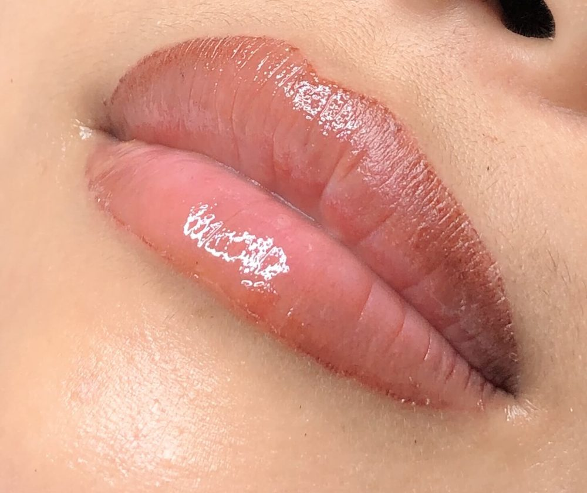

Cosmetic tattoo, North Willoughby
Brows, eyes and lips, designed for your face.
Yoko Hamaguchi, a cosmetic tattoo artist from Tokyo, creates each shape to balance with your facial structure.
5.0Rated Excellent in Google reviews


Brows and lips by Yoko, from the gallery

About Yoko
Yoko Hamaguchi
Yoko is from Tokyo, Japan, and brings years of experience in both individualised treatments and training. To her, this isn’t a kind of work but fun, and she enjoys seeing her clients’ joyful expression when the work is complete.
Certifications
- EyelashTia Rouge, Sydney
- Eyebrow, advancedTanya Beauty Care, Sydney
- Eyeliner, lip and eyebrow, advancedDmitry Khatkin
- Scalp Micro-Pigmentation (SMP)Scalp Culture
Google reviews
What clients say.
Every page, in full.
Open a title to read everything on that page of the current website: each treatment, the notes for before and after, the questions, the courses, the shop and the terms.
The text below is the original wording of the current website.
Treatments
Services overview
OUR SERVICES
All Cosmetic Tattoo Services are performed at Clyde. Only Eyelash Extensions and Teeth Whitening is available at North Willoughby.
To us, rendering beauty services goes beyond having a job – it is a passion and our pleasure to make you look beautiful. For every appointment, we interact with you to understand your needs and desire; then we recommend a solution that will be ideal for enhancing your beauty and confidence.
We only use the best quality products, and we ensure your session is comfortable, warm in winter and relaxing. We make sure you walk out the door when you are ecstatically pleased with the result.
At yokototalbeauty, our approach to service delivery is excellent, and we strive to make our services competitive with no compromise on results and customer satisfaction.
Hollywood, Asian, Classic, Bohemian, Euro.
$50
Microblade
Shading
Combination
Wing, Subtle, Eyelash, Thick, Baseline, Top/Bottom.
Eyeliner
Rich, Full, Luscious, 24/7 Natural Look
Lip Tinting
Temple, Part or Full Hairline, Thinning Hair, Men & Women
$770
Hair Line
Precise, Quick, Gentle, Permanent, Fading, Refresh.
$250
Tattoo Removal
Bright, Effective, Quick, White, Radiant, Sparkling.
Teeth Whitening
Natural, Defined, Precise, Custom, Flawless, Fresh.
$880
Nano Brow
Hyaluron Pen
Glamourous, Seductive, Sultry, Alluring, Dolly, Cat.
Eyelashes
Natural, Bright, Lifting, Nourishing, Enhancing, Durable.
$120
Yumi Lash Lift
yokototalbeauty cosmetic artist
Time Schedule
Working Hours
We are available everyday.
Cancellations must be made 24hrs prior to appointment.
Mon - Fri : 9am - 9pm Sat : 9am - 9pm Sunday : 9am - 9pm
Customer Reviews
WHAT PEOPLE SAY
Excellent
5.0
Joanne Stewart
3 days ago
Yoko is an experienced cosmetic professional, I am thrilled with my classic eyelash extensions.
EeEe Nuon
5 days ago
Absolutely! Here’s a warm, genuine review you can post for your teacher and her business: I honestly couldn’t be happier with my lip blush training! 💋✨ Thank you so much to my amazing trainer for being so patient, supportive and encouraging throughout the whole course. You made everything so easy to understand and created such a comfortable environment to learn in. I’m so grateful I chose to train with you and your beautiful business. The knowledge, guidance and skills I’ve gained have given me so much more confidence moving forward. ❤️ Thank you for being absolutely incredible at what you do and for sharing your knowledge with me. I highly recommend you to anyone wanting to learn lip blush! 💕✨ 10/10 experience — truly the best! 🫶🏼💋
Ira Norris
1 week ago
Yoko is a professional in her craft and very warm and welcoming, making you feel at ease throughout the process .i am a very happy customer 😍and will be spreading the word 🫶 thank you Yoko💐
Da monkey girl!
I had my brows done - it was a world apart from my last two tattoo artists. The nano brows look realistic, don't peel off and look slightly bonkers for a couple of weeks, and Yoko lifted the ends to make me look a little younger 😉 Loved it!
Huschi Peronni
2 weeks ago
I’m very happy with the results of my eyeliners tattoo with Yoko! She is incredibly talented, trustworthy, confident, and professional. I felt very comfortable and confident in her hands throughout the whole process. I previously had microblading done by Yoko as well, and the results exceeded my expectations. Her attention to detail and skill are truly impressive. I would highly recommend Yoko to anyone looking for any of the services on her menu. She is professional, caring, and genuinely passionate about what she does. Thank you, Yoko, for the amazing results! ❤️
Sheridan Buchanan
1 month ago
Highly recommend! A wonderful Beautition who combines high quality treatments with a gentle, calming approach. Always leaves me feeling well cared for.
Yu T
I have been visiting Yoko for a few years now, and she is always polite, professional, and very skilled. I’m always happy with her treatments and feel very comfortable in her care. I’m looking forward to exploring more of her different treatments in the future!
Christine L
I am so glad to have found Yoko and could not be happier with results. Her studio is beautiful and has a lot of offerings. Would highly recommend Yoko studio.
Leeanne Tse
3 months ago
Yoko is the best! 😁 I have my brows touched up yearly and I always look forward to it. Her salon is clean, warm and inviting. She has a friendly, kind nature with a personal touch! I recommended her to my sisters-in-law only to discover they go to her as well! 🤭 So, obviously, she comes Highly recommended! 🌼
Response from the owner:Thank you so much, Leeanne. It’s always lovely to see you for your yearly brow touch-up, and I truly appreciate your continued trust. I’m so glad you feel comfortable and welcome in the salon. Finding out your sisters-in-law already come to me as well made me smile! Thank you for your beautiful recommendation. 🌼
Grace Mok
I’m impressed with the LED cat eye look eyelash . Yoko is very skilled and did a fantastic job. Highly recommended!
Response from the owner:Thank you so much, Grace. I’m delighted you love your LED cat eye lashes. It was a pleasure creating this look for you, and I really appreciate your kind words and recommendation.
Hitomi Fujita
4 months ago
Response from the owner:Thank you very much, Hitomi, for your 5-star rating. I truly appreciate your support and hope to welcome you back to the salon again soon.
Erika Yamao (ErikaYamao)
I had nano brows and a lash lift done by Yoko! She designed my brows based on the golden ratio that suited my facial structure perfectly, and I absolutely love the result. During the cosmetic tattoo procedure, she kept checking if I was in pain and applied numbing cream whenever needed, so I was able to feel comfortable and relaxed throughout the treatment. The clinic was also very clean and beautiful, and everything about the experience was amazing. I can’t stop admiring my lashes and brows now, and I’m excited to see how they settle in over time 💞 I would definitely love to come back again. Thank you so much!! 先日はようこさんに眉毛のナノブロウとラッシュリフトを施術していただきました！ 眉毛は自分の骨格に合わせた黄金比でとても綺麗にデザインしてくださり、大満足です。 アートメイク中も何度も痛みがないか確認してくださって、必要な時には麻酔も追加してくれたので、安心して快適に施術を受けることができました。 クリニックもとても清潔感があり、居心地の良い空間で、最初から最後まで素晴らしい対応でした。 今は自分のまつ毛と眉毛を見るたびに気分が上がっています！これからさらに馴染んでいくのが楽しみです💞 またぜひ利用したいと思っています。 本当にありがとうございました！！
Response from the owner:Thank you so much, Erika. I’m truly happy to hear how pleased you are with your Nano Brows and lash lift. Designing brows to suit each individual facial structure and balance is such an important part of the process, so I’m very glad the shape felt natural and beautifully suited to you. Comfort during the procedure is also something I care deeply about, and I’m pleased you felt relaxed and reassured throughout your appointment. Thank you as well for your kind words about the studio environment. It means a great deal that you noticed the care and cleanliness of the space. I’m excited for you to see the brows continue to soften and settle beautifully over the coming weeks. I truly appreciate your trust and look forward to welcoming you again in the future. 💞
Elly
5 months ago
Lash extensions were quick and easy. Yoko's service is discreet and her products are of the highest quality. I have had so many positive comments.
Response from the owner:Thank you, Elly. I’m so glad your lash extensions felt quick and easy, and that you’ve received such lovely comments. I truly appreciate your trust and kind words.
Maki Robinson
Yoko is efficient, reliable, and outstanding at what she does. I strongly recommend her!
Response from the owner:Thank you, Maki. I’m grateful for your thoughtful review. Efficiency, reliability, and careful results are very important to me, and I truly appreciate your recommendation.
Dina Chungue
6 months ago
I had a nano brow combination by Yoko and I am really pleased with my new brows. Yoko is highly skilled and I was very happy with the entire process. Highly recommended. Thank you Yoko!
Response from the owner:Thank you, Dina. I’m so pleased you’re happy with your Nano Brow combination and the overall process. Your recommendation means a great deal.
Virginia
7 months ago
I have done my hairline and I love it !! She is a professional and knows what she is doing ! I highly recommend her !
Response from the owner:Thank you, Virginia. I’m so happy you love your hairline result. Scalp and hairline work require careful detail, and I’m grateful for your trust and recommendation.
Angela Pui On Siu
It was my first time getting a lash lift and an eyeliner tattoo. Yoko-san was so gentle and professional, I am so happy with the results that I am definitely going to be back for more!
Response from the owner:Thank you, Angela. I’m so pleased your first lash lift and eyeliner tattoo experience felt gentle and professional. I’m delighted you’re happy with the results and look forward to welcoming you back.
Deejay Jee
I have been coming to Yoko to have my eyelash extensions done for about one year now, and could not recommend her highly enough. She is incredibly professional but also very kind and thoughtful. My favourite beautician in Sydney. Thanks!
Response from the owner:Thank you so much, Deejay. Your support over the past year truly means a great deal to me. I’m very grateful for your kind words and for trusting me as your beautician in Sydney.
Sharon Batu
8 months ago
Had an amazing experience getting eyelash extensions with Yoko! Her skills are top-notch and the whole process was super relaxing and my eyelashes look stunning 😊 Highly recommend!
Toshi
I had a Nano Brow Combination treatment with Yoko, and the experience was excellent. She is very professional and took the time to provide detailed information throughout the process, which made me feel completely comfortable and confident. The results look great, and I highly recommend her services.
Response from the owner:Thank you very much, Toshi. I’m so pleased you felt comfortable and well-informed throughout your Nano Brow Combination treatment. I’m delighted you’re happy with the results and truly appreciate your recommendation.
Yee Cheng
I had a nanobrow done and Yoko was an absolute professional. Her craft is like artwork and she does it in the gentlest way possible. All at the same time she makes you relax by talking softly. I could not sing her praises higher. Totally recommend if you want this done right, she's the person.
Response from the owner:Thank you so much, Yee. I truly appreciate your thoughtful words. Nano Brows require a delicate hand and careful attention to detail, so it means a great deal that you felt both the artistry and the gentleness of the process. I’m very grateful for your recommendation and your trust
Melanie Gale
9 months ago
Efficient and Fabulous! I had my first experience of eyelash extensions today and it was a great experience. Yoko's salon is immaculate and welcoming, the procedure was comfortable and quick. I've adjusted to my lashes quickly and they look fab - glamorous and natural. Highly recommended!
Response from the owner:Thank you, Melanie. I’m so pleased your first experience with eyelash extensions felt comfortable and seamless. I’m glad you’ve adjusted quickly and are enjoying the balance of glamour and natural softness. Your recommendation truly means a great deal.
Elizabeth Hastings
Yoko is an artist. Her work is so careful and precise. I am so happy with my nano-brow results.
Response from the owner:Your words truly mean so much. Nano Brows require patience, balance, and precision, so I’m very grateful that you see the artistry in the work. I’m so pleased you’re happy with your results and appreciate your trust in me.
Esra H
Yoko is the absolute best. I’ve been going to her for 6 years for permanent eyeliner, facials and microblading. She is a true artist. I’ve sent many friends and family to her who also thinks she’s excellent. The BEST ❤️
Response from the owner:Thank you, Esra. Six years of trust truly means so much to me. It has been a privilege to care for your eyeliner, brows, and skin over time. Your continued support, and the referrals of your friends and family, are something I never take lightly. I’m deeply grateful for your loyalty and kind words.
Jan Prudente
10 months ago
Yoko is amazing!!! 💕💕 I highly recommend her🫶🏻 💯 Teeth whitening ✅ Scalp pigmentation ✅
Response from the owner:Thank you so much, Jan. I truly appreciate your enthusiasm and trust. It’s always a pleasure caring for you — whether for teeth whitening or scalp pigmentation, each treatment is approached with precision and attention to detail. Your recommendation means a great deal to me. 💕
Nano Brow
Nano Brow Sydney by Yoko Hamaguchi
Nano brow sydney
A Revolution for your eyebrows.
Imagine waking up every morning with perfectly shaped, full, and natural-looking brows—no pencils or powders required. At yokototalbeauty, our Nano Brow service offers a revolutionary solution for achieving the brows you’ve always dreamed of..
When you desire naturally flawless brows that elevate your look with lasting beauty, our nano brow technique at Yokototalbeauty delivers. Imagine perfectly defined yet soft brows, giving you that luxurious Hollywood-ready appearance.
You’ll love our nano brow service, where custom design meets advanced technology to enhance your natural beauty. Whether you seek fuller brows or a subtle lift, our expert team tailors the service to suit your facial features. Rest assured, we are the trusted Sydney eyebrow tattoo studio committed to bringing your beauty dreams to life.
Our process results in beautifully groomed, natural-looking brows, making it the ideal semi-permanent solution for effortless elegance. It’s no surprise that our clientele has grown through referrals, and we offer a leading nano brow training course in Sydney.
If you have existing brow shading that you’re no longer happy with, it’s natural to feel unsure about the next steps. At yokototalbeauty, we specialize in helping clients achieve their dream brows, even if they have previous work that isn’t quite what they envisioned. Our expert artists can assess your current brow shading and recommend the best approach, which may include gentle removal techniques like our Picosecond Tattoo Removal or a strategic reshaping with our advanced nano brow process. Don’t let past treatments hold you back from getting the brows you truly want. With our customized approach, we’ll help you move past the old and embrace a fresh, natural look tailored just for you.
Many of our clients love to pair their Nano Brow service with an Eyelash Extension session for a full, eye-enhancing transformation. This combination creates captivating eyes that remain within the realm of natural beauty—no extreme or unnatural results here, just subtle sophistication.
Treat yourself to an unforgettable experience with Yoko and leave feeling like the most confident, vibrant version of yourself.
Book a consultation to discuss your beauty goals and any questions you may have.
PRICING PLAN
- Nano Brow Eyebrows $990
Get Appointment
All prices are GST inclusive
4 days ago
Microblading
Microblading Sydney close to Chatswood, Artarmon & Lane Cove
Microblading Sydney
We are a specialised beauty studio that is committed to the best possible customer experience in Microblading. Our beauticians will use the latest techniques to create your eyebrows strand-by-strand to give you the most naturally looking 3D-like results. It doesn’t matter the type of eyebrows you have – light eyebrows, no eyebrows or partial eyebrows, our artists will give you an eyebrow shape that is balanced and perfectly filled-in with your facial structure.
The results of our Microblading procedure are amazing and the best part is that the eyebrows can last for a long time depending on your skin type. At Yokototalbeauty, we use top quality products that will not change colour and fade quickly. More so, during your Microblading session, our artists are usually so warm and friendly and we will make the whole process fun and literally painless. 100% satisfaction is assured with our eyebrow specialist Sydney service, because we take on each job with all needed expertise. Additionally, our passion for this particular art runs so deep we offer a microblading course Sydney based.
However, trusting your Microblading needs to nonprofessionals is a gamble taken too far, you may spend more and still will not get satisfactory services. If you want excellent eyebrow services or you’re searching for eyebrow tattoo Sydney or cosmetic tattooing Sydney, our artists are wholesomely creative, fully certified and experienced to meet your microblading needs.
You should never underestimate the power of having flawless and fuller looking brows – it makes you look gorgeous and restores your self-confidence.
Book an appointment with us today by clicking the link below and get perfect eyebrows with Microblading.
Microblading will help enhance your natural beauty using a new technique of semi-permanent makeup. With the latest cosmetic techniques, you can have a fuller eyebrow and save money and time.
We implant pigment to a depth between 0.6mm & 1.2mm. We use hand methods to deliver our Microblading services to give you the ideal shape that will fit your unique facial features. Our specialised hand tools and method is a realistic approach to beautiful brows, and we guarantee that with our services, your eyebrows will blend perfectly and you wouldn’t like to use eyebrow pencils in the foreseeable future.
Beyond providing Microblading services, we are also dedicated to sharing our knowledge and empowering others through our comprehensive courses. These instructional programs are meticulously designed to equip aspiring Microblading artists with the skills and confidence they need to succeed in this fast-growing field. Our courses cover everything from basic techniques and color theory to advanced strategies for customizing brow shapes and handling challenging scenarios. We are passionate about fostering a supportive and interactive learning environment where students can thrive and make their mark in the world of Microblading.
Eyebrows
- Microblading $770
- Shading $770
- Combination $850
- Nano Brow $880
- Touch Ups
- > 6 mths $330
- 6-12mths $385
- 12-24 mths $495
- 24mths >$550
- Eyebrow trim 15min Free
- (15min existing customers only)
Powder Brow / Shading
Powder Brow/Shading Sydney close to Chatswood & Artarmon
Powder Brow/Shading Sydney
Powder Brow/Shading is the latest innovation in eyebrow Microblading, and a perfect way to give your eyebrows a semipermanent makeup effect. At yokototalbeauty, we create brow perfection by using a dual needle tool with shading powder ink to infill your eyebrow making it more natural and subtle. With our shading techniques, we will design a unique shape that will influence the total symmetry of your face.
Our Powder Brow/Shading procedure is revolutionary, we will analyse your eyebrow hair growth pattern and facial structure before customising a unique style. To our artists, beautiful brows are never an option but a necessity for every woman that needs to build her confidence and command influence.
Depending on your preference, we could add makeup effects like ombre, powder effect, light ombre or we can perform the standard shading with unique designs.
Powder Brow/Shading plus Microblading done at yokototalbeauty will promote growth and fullness, perfect your existing eyebrow without the hassle of a long makeup routine Our priority is to give you that surgical precision so that your eyebrow will remain subtle, super dense, longer and more elegantly arched. Book an appointment with us today.
Powder Shading
- Full Colour for both Eyebrows $770
Microblading and Shading Combination
Microblading and Shading Combination Sydney by Yoko Hamaguchi
Microblading and shading comination Sydney
A combo of microblading and shading with powder infills could be what will set your beauty apart. This is the best of both worlds when it comes to having your eyebrows either refreshed, reshaped or you need a set of eyebrows.
When you want incredibly beautiful, classy Hollywood style eyebrows that look very natural, we know how to achieve a makeup finished look with better definition and longevity.
You cannot resist our signature eyebrow microblading with beautiful custom brow design. We will cater to any and every eyebrow/lash fantasy you have by reshaping the brows to best fit your facial structure so that your makeup will look so luxe. Have the peace of mind that we are that eyebrow tattoo Sydney studio that are dedicated to bringing your style goals to life.
Our combination renders brows pristinely groomed, as a result, it is the perfect semi-permanent solution that will make you attractive and romantic. No wonder, our customer base has grown tremendously through referrals, and to give back to the society, we offer an excellent microblading course Sydney based.
We have many clients book an Eyelash Extension session followed by our superb Combination procedure. This is one of the ultimate ways to create undeniably outstanding eyes, all the time keeping within a natural framework that won’t look outlandish or freaky.
Have yourself a truly pampering experience with Yoko and walk out a new confident brimming woman.
Book a consultation to go over any questions or concerns.
- Microblading & Shading Combination $850
Eyeliner cosmetic tattoo
Eyeliner Cosmetic Tattoo Sydney near Chatswood, Roseville & Artarmon
Eyeliner cosmetic tattoo Sydney
With our eyeliner tattoo Sydney, we will create a unique design that best matches your desired look, eye shape and facial symmetry. Whether you use eyelash extensions or not, permanent eyeliner will create a fuller look and enhance your lashes as well as compliment your hair and skin tone.
At yokototalbeauty, we believe that a great eyeliner comes from 4 factors; skill, experience, excellent pigment and the right machine, and interestingly, we have them all and more!
Whatever your preference, our permanent makeup Sydney service is synonymous with quality, the creativity of our artist is second to none, we will give you that touch of class and head-turning eyeliner design.
Therefore, if you want that sultry, mesmerising, alluring, and glamorous eyes, then, now is the time to enhance your beauty. Kindly reach out to us for both Eyeliner and cosmetic tattooing Sydney.
- Lower $330
- Upper/Lower (Combo) $770
- Upper with Lash Enhance $550
- Upper Thick (Wing) $880
- Smokey Eyeliner $880
Lip Blush Tattoo
Lip Blush Tattoo Sydney close to Chatswood, Artarmon & Lane Cove
Lip Blush Sydney
At yokototalbeauty, led by Yoko Hamaguchi, we deliver industry-leading cosmetic tattooing services synonymous with excellence in Sydney. One of our flagship services offered at YTB is Lip Blush. Over time, lips may exhibit signs of aging, manifesting as diminished vibrancy and less distinct edges. Our advanced lip blush service provides an effective solution, allowing clients to appear refreshed and more youthful with plumped and defined. lips. Designed with precision, our procedure is minimally invasive and optimised for client comfort.
Our method eliminates the need for injected anaesthetics, introducing pigment at a depth of just 0.10mm with a precision needle, effectively minimising bleeding. While this particular service may not cater to every individual, we’ve diversified our offerings with a specialised Lip Liner for those seeking alternative solutions.
Click get appointment below to get a consultation with us will help you achieve the best result for your skin/pigment type.
Lip Tattoo
- Lip Line$330
- Full Lip $880
- 12mnths $330
Hairline
Hairline Solution, Hair Tattoo & Scalp Micropigmentation Sydney
Hair Microblading Sydney
Most people are struggling with baldness, alopecia, scars, or thinning hair without the solution on sight. Some feel they are getting balder by the minute and can’t stand their image in the mirror! If your hair is not as full as it once was, you are not the only one suffering from premature or fully developed baldness. However, you’re close to restoring your youthfulness if you can take proactive action.
Hair Microblading is the solution you’ve been searching for! Though it is somewhat a new addition to semipermanent tattooing, historically hairlines were tattooed, but it tended to lack definition. Hairline Microblading takes a step further by introducing hairlines to match your hair type, thickness, and colour. We have had a 100% success rate for our clients to date.
At Yokototalbeauty, we will execute hairline Microblading with a clinical precision that will produce most naturallooking results. We can fill in your temples, fill your part lines, or create a full hairline. For men, we can improve balding or thinning hair areas, making them look fuller.
We will ensure your hairline treatment is in proportion to your forehead, doesn’t look obvious and will enhance your features, matching perfectly to your current hair colour.
Please note that transplants or hair re-growth products aren’t working; but with our artistry and the expertise of Yoko (the CEO) in hairline Microblading, you will get the most gratifying and fulfilling experience. Interestingly, there will not be surgeries, scars, waiting, or other inconveniences. Once you book an appointment with us, our artist will let you know what is realistically achievable.
However, the final results of our hairline Microblading procedure are highly dependable – you can shower, sweat, and even swim.
We are a Sydney permanent makeup destination and our hairline service is designed to solve the baldness, alopecia or thinning hair issues for both male and female.
Contact us for a consultation. We are happy to discuss your options and our procedure for men and women.
- Thinning/Balding Spot $440
- Hairline Part $660
- Temple Infill $550
- Full Hairline $880
- Prices will vary by the size of work required.
Scalp Micropigmentation (SMP)
Scalp Micropigmentation Sydney (SMP®) near Chatswood & Artarmon
Scalp Micro-Pigmentation Sydney
Scalp micropigmentation or (SMP) is a cosmetic procedure offered by yokototalbeauty to both our male and female clients and is a cosmetic procedure that creates the illusion of fuller hair. It is also known and commonly referred to as a “hair tattoo”. The team at yokototalbeauty understand the adverse impacts hair loss can have to our clients, and we offer scalp micropigmentation as a quality service, to ensure that all our clients can be confident with their appearance and within themselves.
yokototalbeauty is a fantastic scalp micropigmentation artist in Sydney that offers excellent natural hair loss solutions for balding, thinning hair, transplant scars, and alopecia. We replicate tiny hair follicles to give you the look of a buzz cut or short hair stubble.
Our technique helps you achieve a youthful, modern appearance, whatever the pattern or extent of your hair loss. SMP can:
- Create the appearance of a fuller, thicker head of hair
- Recreate a natural, more youthful frontal hairline and side profiles
- Permanently camouflage the symptoms of alopecia, however severe or recurrent
- Camouflage hair transplant scars from FUT or FUE surgery
- Hide birthmarks and accident-related scars or burns
- Work as a combination solution with a hair transplant to provide additional density or Hair Line Microblading to add texture.
Scalp micropigmentation is a non-surgical procedure, that is safe, efficient, and provides immediate results. It is perfect for many of our clients who experience significant hair loss, but in particular, clients who have recently undergone cancer treatments, who suffer from alopecia or those who have thinning hair. The process of scalp micropigmentation is relatively simple. Prior to commencing treatment or technicians will discuss expected outcomes, and draw an outline. The procedure can then commence and involves placing tiny, layered dots in different shades of black in areas where hair loss is prominent in order to replicate the look of a hair follicle, effecting a shadow look on the scalp.
This process provides clients with natural looking depth and definition in the hair. The pigments that are used and applied as part of the scalp micropigmentation procedure are specifically designed to create the appearance of thicker hair. For those who are completely bald, the process can give the appearance of a shaved, full head of hair, which is particularly popular with our male clients.
There are many clinics that claim to be industry leaders, provide the best available with cutting edge technology. We also don’t cut corners and like to raise the bar, so we simply encourage you to do your research, meet with Yoko Hamaguchi and make up your own mind – no hooks or strings attached.
Yoko has done thousands of detailed cosmetic tattoos and with her clinical background will translate your vision into a smile of achievement. yokototalbeauty combines a wealth of knowledge and skill across various disciplines in the cosmetic tattoo industry.
- Non-surgical
- Treatments for all budgets
- Blends with existing hair
- Finance options available
- Fast recovery
- We also have interest-free finance available, ask us for more info at your consultation.
As an intricate and nonsurgical procedure, scalp micropigmentation ensures immediate and instant results for our clients, who leave our studio feeling confident and empowered by their appearance. In terms of recovery time, other than some localised swelling and redness of the treated area, there is no significant downtime, with most of our clients returning to work or going about their day immediately following the procedure.
Whilst effects and recovery time is minimal it is important to note that following scalp micropigmentation you will not be able to wash your hair or scalp or get the treated area wet for a 4 day period, to ensure that optimal results are achieved. Our skilled technicians will however provide full aftercare instructions following the procedure and can be contacted at anytime after the procedure to address any questions you may have.
The team at yokototalbeauty, are highly experienced in scalp micropigmentation procedures, and in accordance with our values, we provide a friendly, reliable and affordable service to our clients. If you are experiencing hair loss and would like to know more about how yokototalbeauty can assist you with a scalp micropigmentation procedure, please get in contact with us today. Servicing the Sydney area, with extended business hours across 7 days of the week, we provide the flexibility to ensure we can schedule procedures at times suitable and convenient to you.
Micro-Pigmentation
- Widows Peak $2475
- Full Head $4400
- Half Head $2200
- Scar Treatment $2750
- Bald Patches plus $1485
- Repair $2750
All treatments are 3 sessions.
Eyelash Extensions
Eyelash Extensions Sydney Close to Chatswood, Artarmon & Lane Cove
Eyelash Extensions Sydney
Customise your appearance with our longer-looking lashes and become the cynosure of all eyes. With our eyelash extensions, you will enhance your natural beauty, boost your confidence, and increase eye contact even with people of high net-worth.
At yokototalbeauty, we are dedicated to exceeding your expectations with 100% real lashes, and we serve women of all ages and ethnicities.
We have a wide variety of materials that are durable, safe, specialised and resistant to wear. We will use lashes with proven elasticity and will ensure there is no damage to the natural lash. Besides, our experience and expertise in handling different types of eyelash extensions will make the transformation of your lashes incredibly comfortable.
As a premium eyelash extensions Sydney based company, we provide what you require with top quality mink lashes and Japanese adhesives of the highest standards. We urge you to look beyond the obvious dollar amount and allow our technicians to fix the eyelash extensions that will bring out the beauty in you as well as fit your lifestyle.
You can also purchase our specialised Eyelash Shampoo to keep your lash extensions in the best condition.
As a technician, Yoko offers breath-taking eyelash extension services that are completely inspiring and that can thicken and lengthen your natural lashes. We specialise in classic, full set, and in-fills. We provide whatever your requirements are, ranging from 2D – 4D to help you achieve that romantic and seductive look you so desire.
- Glamour Extensions
- Natural Extensions
- Classic Extensions
- Removal Service
If you desire perfect, natural looking lashes, our studio is the right place to enquire and make a booking.
EyeLashes
- Yumi Lash Lift $120
- Single full classic set $120
- Single & 2D glamour set $130
- Full 2D-3D set $130
- Full 4D set $155
- Infill
- Single 2 Weeks $80
- Single 3 Weeks $90
- 2D-3D 2 Weeks $80
- 2D-3D 3 Weeks $100
- 4D plus $30
- Eyelash Removal $25
Yumi Lash Lift
A Revelation for your eyelashes.
You can now revolutionise your current eyelash enhancement regime with the prestigious Yumi™ Lashes Keratin Lash Lift.
Eyelash extensions can be high maintenance with its particular restrictions, them falling out, and generally looking rather haggard after a couple of weeks.
Provided you have lashes, this advanced lash enhancing technique has come all the way from Europe and is a perfect alternative if are allergic or sensitive to eyelash adhesive or have difficulty maintaining your eyelash extensions.
Eyelash adhesive has been known for some clients to be a little irritating. We infuse your lashes with plant based Keratin, Proteins and Nourishing Agents in 3 separate solutions. Exclusively imported from France, this treatment improves your lashes by lifting and curling the hairs. Unlike a lash perm that just curls your lashes, Yumi™ Lashes Keratin Lash Lift infuses serums which lift and curl the hairs from the root, resulting in thicker, voluminous natural lashes. We also apply CoenzymeQ10 gel pads to the under-eye area during the procedure, and this active is known to have anti-ageing properties.
Improve your appearance and person to person impact with the ultimate brighter, younger ’open eye’ look, especially when you add the optional Yumi™ Ultra Dark tint to your treatment.
When you combine this with our unique lash growth product. You’re on a combination that is bound to have friends commenting; “You look so much younger and brighter.”
We can assure this procedure and the products are very safe, non damaging, paragon free, non-toxic, hypoallergenic, Formaldehyde Free and cruelty free.
Treatment time is up to 75 mins and the treatment will last 8 weeks up to 12 WEEKS!
Simply make an easy free consultation booking here in just a few clicks.
What is Yumi Lash Lift?
Yumi Lash Lift is a premium Keratin Lash Lift. This treatment lifts up your natural lashes upwards to create the appearance of longer and thicker looking lashes as it comes with a Free Lash Tint. Yumi Lash Lift is a great alternative to Lash Extensions as it only uses your own natural lashes.
How long does the YUMI Lash Lift take?
The YUMI Lash Lift treatment takes about 60-75 mins.
Does the YUMI Lash Lift treatment hurt?
No, absolutely not, YUMI Lash Lift treatment is 100% pain-free.
What makes the YUMI Lash Lift treatment different from an eyelash perming?
Eyelash perming uses very harsh chemicals that can severely damage or break the natural lash, and can do a lot of damage to the eye if there is a bad application. The YUMI Lash Lift takes your natural lashes and delicately lifts them from the root to make them appear longer and more full. Your eye will appear bigger and lashes appear longer. YUMI Lash Lift is made in France and formula is a very gentle keratin protein treatment that adds nutrients and vitamins into the eyelashes. It’s hypo-allergenic, cruelty-free, and extremely nourishing.
How long does this treatment last for, and how often can I get it done?
This treatment lasts up to 8 weeks, even 12 weeks (complete natural eyelash cycle). Eyelashes grow and naturally fall out in a lash cycle every 2-3 months. Normally around the 3rd – 4th week, you may notice new straight lashes growing in among the previously lifted lashes. Most of our clients come for another Lash Lift between 4-8 weeks. We recommend waiting at least 4 weeks.
I have really short lashes or not much lashes can I get a YUMI Lash Lift?
Yes of course. You may be really pleased with the results and realise your eyelashes are actually longer than you thought.
I'm vegan, can I get a YUMI Lash Lift?
Yes absolutely! The YUMI Lash Lift treatment is vegan (the keratin is derived from plant amino acids which are known for their smoothing & reparative qualities), non-toxic, hypoallergenic, paraben-free, cruelty-free, and formaldehyde-free. The adhesive glue we use is 100% sugar cane.
I have eyelash extensions, can I get a YUMI Lash Lift?
Not with eyelash extensions. However, we offer an Eyelash extension removal for $30, then you can do a YUMI Last Lift straight afterward.
Can I wear mascara with Yumi Lash Lift?
Absolutely. However, most people choose not to wear mascara as they feel the effect of the YUMI™ Lashes is enough to pop the eyes.
What is the proper aftercare after getting a YUMI Lash Lift?
You are advised NOT to get your eyelashes wet for a full 24 – 48 hours after receiving your YUMI Lash Lift. After that 24 -48 hour period, you are free to do whatever you like. You can wear any mascara you like, you can wash your face with any type of face wash, you can rub your eyes, sleep on your face, go swimming. These are 100% your own lashes so return to treating them as normal. You can even wear false eyelashes if you wish too.
Is the YUMI Lashes treatment just for women?
Absolutely not, Men are more than welcome to have this treatment done.
Can I use EyeEnvy with a YUMI Lash Lift?
Most definitely! They are the best lash combo for naturally beautiful long & curly lashes.
Can I get the treatment done if I'm pregnant or breastfeeding?
Absolutely! This treatment is 100% safe for any new mom, or mom to be. However, with all the additional hormones in the body during the time of pregnancy or postpartum, there is no guarantee the treatment will take the curl pattern of your natural eyelashes.
I have recently undergone chemotherapy, am I able to have a YUMI Lash Lift?
Yes absolutely! Please just let us know before the treatment starts so we can adjust the processing time and make sure your new lashes stay as healthy as possible.
Is there an age limit for treatment?
This treatment is hypoallergenic, non-toxic, and extremely gentle so anyone from teenager to elderly can experience fantastic lashes.
Plasma Skin Tightening
Plasma Skin Tightening Sydney near Chatswood, Roseville & Artarmon
Plasma Skin Tightening Sydney
yokototalbeauty is excited to be able to offer the people of Sydney one of the newest cosmetic treatments on the market, with our dedicated and experienced team committed to providing superior quality treatments to our clients. Plasma skin tightening or plasma fibroblast is one such treatment.
Plasma skin tightening is an innovative and revolutionary, non-surgical enhancement procedure that is designed to shrink the skin, using a sterile and disposable probe.
With benefits including skin tightening, wrinkle reduction and skin rejuvenation, Plasma skin tightening is also an attractive and cost-effective alternative to invasive surgical procedures.
The plasma skin tightening’s unique fibroblastic technique assists in the repair process and effectively reverses these initial and typical signs of ageing.
The process of Plasma skin tightening is quite simple. Using a unique device, called a plasma pen, due to its pen-like shape, it is held above the skin, in which a small plasma arc connects the tip of the device to the skin. This creates plasma waves, which are subsequently directed as miniscule light spots, producing new collagen along wrinkle lines. The skin in the targeted area, contracts during this process, which results in the tightening and shrinking of the skin. With the tip of the plasma pen never directly touching the surface of the skin, and the small needle attachment being a single use, sterile product, the plasma skin tightening procedure is a very safe procedure, carrying minimal risks for clients.
Suitability
Literally, every woman wants to look her best, and having great skin is an essential part of that. At yokototalbeauty, we want all of our clients to feel beautiful and empowered as a result of their cosmetic beauty procedures. With this in mind, it is important to note that Plasma skin Tightening is not suitable for everyone. Before booking a procedure with one of our qualified and experienced team members, give us a call and we can assess your suitability. What skin conditions does Plasma Skin Tightening treat?
As well as reducing the visible signs of ageing such as crows’ feet and wrinkles, plasma fibroblast therapy can be used as an effective treatment for a range of skin conditions such as acne scarring, photo ageing, including age spots, and seborrheic keratosis. Wrinkle reduction, however, is its most popular indication.
Benefits
The plasma skin tightening treatment is perfect for those who are not wanting to take the risk and undergo, invasive cosmetic procedures to achieve tighter, rejuvenated and wrinkle free skin. Some of the other benefits of undergoing a plasma skin tightening procedure include;
• Minimal risks and side effects, with the plasma pen, not having any direct contact with the treated area. • No cutting or scalpels, with sterile single use tools utilised for the complete procedure • No injectables such as Botox or fillers • Fast recovery time, no stitches, with many of our clients returning to work on the same day as the procedure • Fast and easy procedure, that generally lasts between 30 and 60 minutes, depending upon the extent of the areas that are being treated as part of the procedure. We don’t waste hours of your time.
What are the steps involved in a plasma skin tightening procedure?
Whilst processes and techniques can vary from clinic to clinic, the experienced team at yokototalbeauty, typically perform the following steps in the course of a plasma skin tightening procedure;
• We begin by gently cleansing the skin, followed by the application of a topical anaesthetic or numbing cream, which will assist in making the procedure as pain free as possible. •. Around 20-30 minutes after the application of the numbing cream to the area that is to be treated, we are ready to begin. • Using the plasma pen, we treat the selected area or areas, with the pen creating small arcs of microcurrents that make small scab-like dots on the skin. • Once we have treated the area or areas desired, we will then gently clean the area, and apply a cooling gel. The cooling gel will assist in soothing the skin, and minimising any burning, stinging or tingling sensation as much as possible.
With the entire procedure taking around 40-60 minutes from start to finish, this nonsurgical cosmetic treatment, is perfect for Sydney professionals, and can even be arranged on your lunchbreak, ensuring you return to the office, on time, with immediate results.
Results
Results of plasma skin tightening are generally, almost immediate, with visible tightening and improvements continuing for around three months following an initial treatment procedure. Depending upon skin type and other factors such as age, some of our clients may need an additional treatment to attain maximum benefits and optimal results.
In terms of longevity, plasma skin tightening maintains results, again depending on the individual for between 3 to 5 years.
Whilst clients should expect to experience some slight swelling, itchiness and redness, with some localised scabbing during healing phase to the treated area, following the procedure, for between 5-7 days, there is no significant recovery time, making the procedure an extremely attractive alternative to invasive surgical procedures that offer similar results.
We encourage our clients to strictly follow our after care regime to maximise results. 70% of your success is based on after care.
Recovery
As plasma skin tightening is a non-surgical procedure and involves no cuts or stiches or anything overly invasive, recovery time is fast, with many people retuning to work straight after completing their treatment. Generally, some minor swelling, itchiness and scabbing is experienced in the first 5-7 days following the procedure.
As every individual is different, with different skin tone, recovery will vary from person to person. The team at yokototalbeauty will gladly answer any queries and concerns, with you directly, and provide expert advice on what to expect in your recovery from the procedure.
The team at yokototalbeauty are highly trained in plasma skin tightening procedures, having served the local Sydney community for a number of years. As a team, we pride ourselves on remaining up to date with the latest beauty trends and techniques, ensuring that the women of Sydney have access to an extensive range of cosmetic beauty treatments.
Hyaluron Pen
Hyaluron Pen Sydney
When it comes to transforming your lips to be beautiful, juicy, and hydrated, then, the Hyaluron pen is a game-changer. This is a perfect and more natural way to enhance your lips and also reduce facial wrinkles and lines. The Hyaluron Pen treatment is done with no needles, no toxic chemicals (we only use natural hyaluronic acid), and the process is almost painless with minimal bruising that can disappear in no time.
With this non-invasive method of pumping up the lips, the hyaluronic acid is distributed across a greater surface area compared to needle injections. The filler is natural, compactable, and does not pool under the skin. The substance (hyaluronic acid) also acts as a nutrient transfer medium between the bloodstream and skin cells. You will be incredibly excited with the fullness of your lips and the good news is that it stays longer without giving you bruises or ‘duck lips.’
This is just a good choice to rejuvenate the lips, skin and also reduce fine lines. So whether you’re local, a tourist or you’re new in town, do not miss this opportunity presented by yokototalbeauty to make your lips juicier. No wonder we have been acclaimed as the best lip injections Sydney and beyond.
Yokototalbeauty is the best lip fillers Sydney with artists and experts that are experienced in using the Hyaluron Pen to help women achieve certain lip size/shape. We also offer treatments performed by RN’s.
Call us now to schedule your free consultation.
- Hyaluron Augmentation / Lip Filler 0.5 ml $220
- Hyaluron Augmentation / Lip Filler 1.0 ml $385
- Mesotherapy Single $80
- Mesotherapy (4 session) $300
- Bio-Revitalisation Single $80
- Bio-Revitalisation (4 session) $300
- Wrinkle Correction (2 sessions) plus $330
Teeth Whitening
Teeth Whitening Sydney
Yokototalbeauty is the one-stop-shop for all your Teeth Whitening Sydney in-office or home treatment needs. We use the most advanced technology to help you achieve up to 9 shades whiter teeth.
With the experience of our Practitioner, you will experience long-lasting results (After-Care dependant), and our procedure has been proven to be safe, effective, fast.
Whether you have discoloured teeth that were caused by your inability to maintain oral hygiene, excessive smoking, drinking coffee, tea, or ageing, you will have an ultimate whitening experience with less or no sensitivities. After completing all your sessions at Yokototalbeauty, you’ll be glad to have gleaming pearly whites.
We provide you with various options for teeth whitening. However, our experts will evaluate the health of your teeth to ensure you’re a good candidate for whitening treatment. This is because the treatment works perfectly on natural tooth enamel. But no need to worry, all you have to do is consult us or come over to our salon and our teeth whitening expert will determine the most effective treatment suited for you.
Our priority is to ensure you achieve that “Hollywood” smile within the shortest time possible. Additionally, you will go with an After-Care sheet which will determine how successful your whitening becomes.
We uphold the highest standards in Teeth Whitening Sydney, and that is why our services are the most preferred for years by both residents and visitors to the city.
Call us now or book a consultation on our website to get quick, painless, and overwhelming teeth whitening results.
- 1 Person Single $240
- Couple Single $440
- 1 Person 3 Sessions $650
- Couple 3 Sessions $1100
All sessions have 2-3 applications of gel.
Cosmetic tattoo removal
cosmetic tattoo removal sydney
Effortlessly erase, refresh, and renew your brows or lips.
Picosecond tattoo removal is the ideal solution for clearing unwanted cosmetic tattoos and prepping for a fresh look. Watch as your old brows fade away, ready for your next PMU transformation..
At yokototalbeauty, we understand that cosmetic tattoos don’t always turn out as expected. With our advanced Picosecond Tattoo Removal technology, we provide a safe and efficient solution for removing unwanted eyebrow, eyeliner, or lip tattoos, helping you achieve the clean slate you need to start fresh.
Our Picosecond Tattoo Removal system is specifically designed for delicate areas like the face, ensuring minimal discomfort while precisely targeting unwanted pigment. Whether it’s faded, uneven, or simply no longer your style, our removal process breaks down ink particles gently, allowing your skin to naturally heal and regenerate. You can trust our expert team to guide you through the process, ensuring the best results with minimal downtime.
Every cosmetic tattoo removal is unique, which is why we offer personalized treatment plans tailored to your specific needs. Whether you’re looking to completely remove old tattoos or lighten them for a fresh cover-up, our experienced technicians will help you determine the best approach.
With our advanced technology, we can achieve effective results without damaging the surrounding skin, allowing you to feel confident in the process from start to finish.
Laser Removal
- Cosmetic Tattoo Removal $250
Before and after your treatment
Services, terms and conditions
Services Terms Conditions
- About our services
yokototalbeauty pty ltd (the “YTB”) is a specialist in providing the following services (the “Services”):
- Cosmetic Tattooing (including Eyebrow feathering, Nano Feather brow, lip tattoo, eyeliner tattoo, Hairline microblading);
- Hyaluron Pen;
- Teeth Whitening;
- Eyelash Extensions;
- Eyeliner, Lip Tattoo, Eyebrow, Hairline Microblading and Hyaluron Pen Training.
We use state of the art technology with the highest available quality materials (inks, lashes, needles, gels, solutions). We pride ourselves on our procedures & techniques, and are committed to delivering our high end Services to all clients.
- Acceptance of the Terms
You accept the Terms by remaining on the Website and/or making a booking and/or utilising YTB services. You may also accept the Terms by clicking to accept or agree to the Terms where this option is made available to you by YOKOTOTALBEAUTY in the user interface.
- General
- We reserve the right to amend, add or delete any or all of the terms and conditions at any time without any prior notice.
- If any of these Terms and Conditions is determined to be unlawful, unenforceable or void, only the relevant term or condition, or the part of the term or condition, that is unenforceable will be excluded from these Terms and Conditions.
- Our failure to exercise any right under these Terms and Conditions does not constitute a waiver of that right or prevent the exercise of any other right.
- Consultations & Bookings
- A Complimentary Concept Consultation is highly recommended prior to booking your procedure appointment. Procedure appointments can be made by our website booking app. A text message confirmation will be sent to you 48 hours prior to your appointment. This is the time to either confirm or reschedule.
- If for any reason YTB is not capable of running the appointment as planned, whether caused by failure of equipment or information technology, line drop out, tampering, unauthorised intervention, fraud, technical failures or any other cause beyond the control of YTB which corrupt or affect the administration, security, fairness or integrity of YTB, YTB reserves the right in its sole discretion, (subject to any written direction given by relevant regulatory authorities), to cancel, terminate, modify or suspend the appointment subject to notice provided to clients.
- In the circumstance that the appointment cannot be held, we will reschedule (if we deem plausible) the appointment with you via text message, email or other form of electronic communication.
- Payment
- Service Fees are due and payable in full on the day of the procedure. Prices include GST, are subject to change without prior written notice, and are correct at time of publishing.
- Where the option is given to you, you may make payment for the Services (the ' Services Fee') by way of:
- Credit Card (‘PayPal or Square Merchant')
- Cash ('Cash')
- Afterpay, Stripe, Ezypay, Payright
- All payments made in the course of your use of the Services are made using Paypal, Square, Afterpay, Stripe, Payright or Ezypay. In using the Website, the Services or when making any payment in relation to your use of the Services, you warrant that you have read, understood and agree to be bound by the Paypal, Square, Afterpay, Stripe, Ezypay or Payright terms and conditions which are available on their website.
- You acknowledge and agree that where a request for the payment of the Services Fee is returned or denied, for whatever reason, by your financial institution or is unpaid by you for any other reason, then you are liable for any costs, including banking fees and charges, associated with the Services Fee.
- You agree and acknowledge that YOKOTOTALBEAUTY can vary the Services Fee at any time.
- You agree to and acknowledge that a 2% transaction/merchant fee is added to all transactions when making payments with a credit or visa debit card facility.
- You agree to and acknowledge that a 3% transaction/merchant fee is added to all transactions when making payments via the Stripe merchant service.
- Refund Policy
- YOKOTOTALBEAUTY will only provide you with a refund of the Services Fee in the event they are unable to continue to provide the Services or if the manager of YOKOTOTALBEAUTY makes a decision, at its absolute discretion, that it is reasonable to do so under the circumstances (the 'Refund').
- Cancellation Policy
- For ultimate client satisfaction, we set aside a substantial appointment time. Therefore, a minimum of 48 hours notice is required to cancel or make changes to an appointment. If you fail to cancel/change your appointment/course with less than 48 hours notice you will forfeit your deposit (Course Training) and a new deposit will be required to book a new appointment/course. Clients that do not show up for their appointment/course will forfeit their deposit. This cancellation policy also applies to any complimentary touch up appointments. Failure to provide notice of cancellation or request change to your touch up appointment will incur a reschedule fee. All trademarks, service marks and trade names are owned, registered and/or licensed by YOKOTOTALBEAUTY.
- Model Spots for Training
- YOKOTOTALBEAUTY requires full payment of $200 at time of booking to secure your place and are non-refundable.
- Your model spot includes a free touch up at 6 weeks and must be booked at time of training day.
- Training & Courses
- Deposit and cancellation:
- You can cancel a training session up to four (4) weeks before the training commencement date and your deposit will be refunded minus an administration fee of $100 per deposit taken.
- Deposits will not be refunded for any cancellation during the 4 weeks prior to the training commencing date.
- The remaining payment for your course must be paid 14 days before the commencing date of the course, via bank transfer or another payment method (Section 5.2). Full payment at this stage is non-refundable.
- Bookings for Microblading, Cosmetic Tattooing, Eyelash Extensions and Teeth Whitening courses can be rescheduled up to two (2) weeks prior to the commencing date of the course that has been booked, you may incur additional charges if you want to reschedule for a training session date.
- You can not reschedule or cancel a training session if it is booked within two (2) weeks prior to the training session, unless requested by yokototalbeauty (us).
- If you do not show up to your training session, your deposit and course fee will not be refunded.
- You have the right to a 10 day cooling off period after making a deposit, if you change your mind or for any other reason, up to four (4) weeks before the training commencement date. The 10 day cooling off period is waived during the 4 weeks prior to the training commencing date and Sections 9.1.1, 9.1.2 take effect.
- You acknowledge you are learning how to use the Hyaluron pen and its products for business with a minimum medical qualification of RN (Registered Nurse);
- or for personal use only as a consumer and will not offer Hyaluron pen services to other people.
- You abide by the TGA (Therapeutic Goods Administration) Regulatory Guidelines as a medical professional.
- Deposits for Multiple Services in 1 (one) day.
- Deposits are not required to secure a booking with yokototalbeauty. However, yokototalbeauty reserves the right to request a deposit for certain procedures under certain circumstances.
- Deposits are non-refundable.
- When booking more than 1 (one) service in 1 (one) day the following terms apply:
- A $100 deposit is required for the 1st (first) cosmetic tattoo procedure in a day;
- A $200 deposit is required for the/all 2nd (second) cosmetic tattoo procedure/s in the same day;
- A $300 deposit is required for the/all 3rd (third) cosmetic tattoo procedure/s.
- These deposits will be deducted from the price of the respective appointment scheduled on the day.
- Payments can be made via bank transfer or over the phone with your credit card, we do not save your credit card details.
- Appointments can be rescheduled with a minimum of 48 hours notice (2 days) prior to your appointment time. If you do not show up to your appointment or reschedule you will lose your deposit.
- If you do not attend to your complementary Touch Up appointment (No show) or reschedule within the time frames in Section 10.2, you will be charged a $100 re-booking fee to re-book your complementary Touch Up.
- All Services
- PMU Tattoo, Microblading & Micropigmentation
- Appointments can be rescheduled with a minimum of 48 hours notice (2 days) prior to your appointment time.
- If you do not attend to your complementary Touch Up appointment (No show) or reschedule within the time frames explained above, you will be charged a $150 re-book fee to re-book your complementary Touch Up.
- Please allow sufficient time for your procedure and arrive promptly (10 to 15 minutes early). If you are more than 20 minutes late to your appointment and we can’t fit you in the next time block, you will miss your appointment and lose your deposit.
- You agree to filling out a Client & Consent form prior to receiving your procedure.
- If you are more than 15 minutes late to your appointment and we can’t fit you in our next time block, you will lose your deposit.
- Payments can be made via payment methods listed in Section 5.3.
- Eyelash Extensions
- Appointments can be rescheduledwith a minimum of 48 hours notice (2 days) prior to your appointment time.
- A dental clean prior to having teeth whitening is highly recommended and improves efficacy of subsequent teeth whitening procedures.
- If you are more than 15 minutes late to your appointment and we cannot fit you in our next time block, you will lose your your deposit.
- We guarantee a whitening result of at least 5 shades by using our shade guide
- Hygiene
- If there are any blemishes, active cold sores or infections in the area to be treated, YTB will not be able to perform the procedure until it has completely cleared. If you are unsure if you have limitations for treatment, please book a free consultation or call Yoko on 0404 104 203 prior to booking.
- General Disclaimer
- Nothing in the Terms limits or excludes any guarantees, warranties, representations or conditions implied or imposed by law, including the Australian Consumer Law (or any liability under them) which by law may not be limited or excluded.
- Subject to this clause, and to the extent permitted by law:
- all terms, guarantees, warranties, representations or conditions which are not expressly stated in the Terms are excluded; and
- YOKOTOTALBEAUTY will not be liable for any special, indirect or consequential loss or damage (unless such loss or damage is reasonably foreseeable resulting from our failure to meet an applicable Consumer Guarantee), loss of profit or opportunity, or damage to goodwill arising out of or in connection with the Services or these Terms (including as a result of not being able to use the Services or the late supply of the Services), whether at common law, under contract, tort (including negligence), in equity, pursuant to statute or otherwise.
- Use of the Services is at your own risk. Everything on the Website and the Services is provided to you "as is" and "as available" without warranty or condition of any kind. None of the affiliates, directors, officers, employees, agents, contributors and licensors of YOKOTOTALBEAUTY make any express or implied representation or warranty about the Services or any products or Services (including the products or Services of YOKOTOTALBEAUTY) referred to on the Website, includes (but is not restricted to) loss or damage you might suffer as a result of any of the following:
- failure of performance, error, omission, interruption, deletion, defect, failure to correct defects, delay in operation or transmission, computer virus or other harmful component, loss of data, communication line failure, unlawful third party conduct, or theft, destruction, alteration or unauthorised access to records;
- the accuracy, suitability or currency of any information on the Website, the Services, or any of its Services related products (including third party material and advertisements on the Website);
- costs incurred as a result of you using the Website, the Services or any of the products of YOKOTOTALBEAUTY; and
- the Services or operation in respect to links which are provided for your convenience.
- Limitation of liability
- YOKOTOTALBEAUTY's total liability arising out of or in connection with the Services or these Terms, however arising, including under contract, tort (including negligence), in equity, under statute or otherwise, will not exceed the resupply of the Services to you.
- You expressly understand and agree that YOKOTOTALBEAUTY, its affiliates, employees, agents, contributors and licensors shall not be liable to you for any direct, indirect, incidental, special consequential or exemplary damages which may be incurred by you, however caused and under any theory of liability. This shall include, but is not limited to, any loss of profit (whether incurred directly or indirectly), any loss of goodwill or business reputation and any other intangible loss.
- Termination of Contract
- The Terms will continue to apply until terminated by either you or by YOKOTOTALBEAUTY as set out below.
- If you want to terminate the Terms, you may do so by:
- providing YOKOTOTALBEAUTY with 7 days' notice of your intention to terminate; and
- closing your accounts for all of the services which you use, where YOKOTOTALBEAUTY has made this option available to you.
- Your notice should be sent, in writing, to YOKOTOTALBEAUTY via the 'Contact Us' link on our homepage.
- YOKOTOTALBEAUTY may at any time, terminate the Terms with you if:
- You have breached any provision of the Terms or intend to breach any provision;
- YOKOTOTALBEAUTY is required to do so by law;
- The provision of the services to you by YOKOTOTALBEAUTY is, in the opinion of YOKOTOTALBEAUTY, no longer commercially viable.
- Subject to local applicable laws, YOKOTOTALBEAUTY reserves the right to discontinue or cancel their service at any time and may suspend or deny, in its sole discretion, your access to all or any of the Services without notice if you breach any provision of the Terms or any applicable law or if your conduct impacts YOKOTOTALBEAUTY's name or reputation or violates the rights of those of another party.
- Warranties & Guarantee
- Whilst every care is taken to ensure that the Services we provide are to the highest possible standards, we make NO guarantee or warranty of the results due to the nature of skin as it heals, and aftercare taken by clients.
- The Services are provided on an “as is” and “as available” basis with no express or implied warranty or conditions as to merchantability, merchantable quality, fitness for a particular purpose, durability, title and non-infringement.
- Indemnity
- You agree to indemnify YOKOTOTALBEAUTY, its affiliates, employees, agents, contributors, third party content providers and licensors from and against:
- All actions, suits, claims, demands, liabilities, costs, expenses, loss and damage (including legal fees on a full indemnity basis) incurred, suffered or arising out of or in connection with Your Content;
- Any direct or indirect consequences of you accessing, using or transacting on the Website or attempts to do so; and/or
- Any breach of the Terms.
- Dispute Resolution
- Compulsory:
If a dispute arises out of or relates to the Terms, either party may not commence any Tribunal or Court proceedings in relation to the dispute, unless the following clauses have been complied with (except where urgent interlocutory relief is sought).
- Notice:
A party to the Terms claiming a dispute ('Dispute') has arisen under the Terms, must give written notice to the other party detailing the nature of the dispute, the desired outcome and the action required to settle the Dispute.
- Resolution:
On receipt of that notice ('Notice') by that other party, the parties to the Terms ('Parties') must:
- Within 14 days of the Notice endeavour in good faith to resolve the Dispute expeditiously by negotiation or such other means upon which they may mutually agree;
- If for any reason whatsoever, 30 days after the date of the Notice, the Dispute has not been resolved, the Parties must either agree upon selection of a mediator or request that an appropriate mediator be appointed by the President of the Australian Mediation Association, Conflict Resolution Service or his or her nominee;
- The Parties are equally liable for the fees and reasonable expenses of a mediator and the cost of the venue of the mediation and without limiting the foregoing undertake to pay any amounts requested by the mediator as a pre-condition to the mediation commencing. The Parties must each pay their own costs associated with the mediation;
- The mediation will be held in 15 Horsley Ave, North Willoughby NSW 2068, Australia.
- Confidential:
All communications concerning negotiations made by the Parties arising out of and in connection with this dispute resolution clause are confidential and to the extent possible, must be treated as "without prejudice" negotiations for the purpose of applicable laws of evidence.
- Termination of Mediation:
If 1 month have elapsed after the start of a mediation of the Dispute and the Dispute has not been resolved, either Party may ask the mediator to terminate the mediation and the mediator must do so.
- Venue and Jurisdiction
- The Services offered by YOKOTOTALBEAUTY is intended to be viewed by residents of Australia. In the event of any dispute arising out of or in relation to our services, you agree that the exclusive venue for resolving any dispute shall be in the courts of New South Wales, Australia.
- Governing Law
- The Terms are governed by the laws of New South Wales, Australia. Any dispute, controversy, proceeding or claim of whatever nature arising out of or in any way relating to the Terms and the rights created hereby shall be governed, interpreted and construed by, under and pursuant to the laws of New South Wales, Australia, without reference to conflict of law principles, notwithstanding mandatory rules. The validity of this governing law clause is not contested. The Terms shall be binding to the benefit of the parties hereto and their successors and assigns.
- Independent Legal Advice
- Both parties confirm and declare that the provisions of the Terms are fair and reasonable and both parties having taken the opportunity to obtain independent legal advice and declare the Terms are not against public policy on the grounds of inequality or bargaining power or general grounds of restraint of trade.
- Severance
- If any part of these Terms is found to be void or unenforceable by a Court of competent jurisdiction, that part shall be severed and the rest of the Terms shall remain in force.
Frequently asked questions
FREQUENTLY ASKED QUESTIONS
COSMETIC TATTOOS
What is cosmetic tattoo?
Cosmetic tattooing is a treatment generally used for eyeliner, eye shadow, lipliner, lip shading, and some practitioners do eyebrows and beauty marks.
What is permanent make up?
Permanent make up is a cosmetic technique which employs tattoos to produce designs that resemble makeup by applying pigment deeper into the skin than semi permanent makeup.
What makes it semi permanent?
Semi Permanent make up implants pigments into the Dermis layer of the skin. Our Lip service only implants to a depth of 0.10mm.
Is it painful?
Yes, however it will depend on your response to the numbing cream. But our mission is to make it as painless as possible. Lips are especially sensitive.
How long will it last?
Cosmetic tattooing can last from 1-5 years and will vary individually. It is very low maintenance, however it still requires some upkeep, so touch ups are recommended in the meantime. I do mine annually, sometimes stretching it out to 18mths, but I like mine to look rich and strong.
How long will it take?
It depends on the procedure, however ordinarily up to 90mins. Set aside 2 hours.
Will it fade ?
Eventually yes! It will take years before you may start to see noticeable fading.
Is it cheaper than using pens?
Initial cosmetic tattooing will be your highest cost. How soon you come back for touch ups will be the factor on your maintenance costs. However, you can’t calculate how much time you save applying penned eyeliner, lipstick or lip liner over 12-24 months…
Is the pigment safe?
Very Safe. A non toxic, naturally derived, vegan base pigment is used.
Can I swim or play sport straight after my procedure?
We recommend that you avoid sport on the day of the procedure, and avoid swimming (fresh or salt water), saunas and steam rooms for at least 6 days or until the skin has fully healed as this could cause infection and the tattoo to fade!
How quick does it heal?
It will vary largely by the individual. However generally about a week for the top layers and a little longer for the deeper layers. Our After-Care Instructions will help make it safe.
Can I get my lip tattooed with cold sores?
Not without prior medication. Stimulation from the needle can trigger your cold sore, therefore we recommend you take medication, as instructed by your health practitioner, prior to treatment.
Can I get my lips tattooed bigger?
We do not tattoo outside of your natural lip line.
MICROBLADING
What is microblading?
Microblading is the application of creating semipermanent hair strokes cut into the skin with specialised hand tools and pigments.
What is semipermanent make up?
Semipermanent make up is a form of temporary cosmetic tattooing done by hand without a machine infusing pharmaceutical grade pigments into the skin.
What makes it semipermanent
Semipermanent make up implants pigments into the first layers of the skin above the Dermis.
Do you have to have your eyebrows shaped before the procedure?
No. Microblading/Shading will create the shape you desire that perfectly matches your style and facial structure.
What colours are available?
Blonde, orange, red, mocha, chocolate, black and anything in between.
Do I need to prepare for the procedure?
Yes. We provide a comprehensive preparation plan when you make a booking with us.
Does it hurt?
Depending on your skin type and threshold for pain. The cream may be more or less effective for you. We find a way to make the procedure as painless as possible.
Will it look fake?
Absolutely not. Our philosophy is ‘natural and fresh’ and that is how you will look after any of my procedures.
What kind of pigment do you use?
A non toxic, naturally derived, vegan pigment is used. Made in Australia.
How long does the procedure take?
75 mins up to 90 mins.
How long does the colour last?
Up to 18 months. This will largely depend on skin tone and type, how your skin retains the pigment.
How do you maintain it?
We provide a comprehensive After-Care system which can be emailed or for you to take home.
Can my bad old tattooed eyebrows be fixed?
Indeed yes. They can certainly be fix. It may take a couple of visits before an old tattoo is completely replaced due to the pigments. Shaping may be laser edged. A consultation will determine the best approach.
Can I swim or play sport or swim after my procedure?
EYELASH EXTENSIONS
What is eyelash extensions?
Eyelash extensions is a method where individual strands of silk hair are carefully positioned on your existing eyelash to make it longer and fuller.
Is it painful or uncomfortable?
The application of putting on eyelash extensions is painless.
How is the eyelash extension applied?
Eyelash extensions are applied with a glue.
Will I have a reaction to the glue?
If you have allergies, is likely you may react to the glue. We don’t recommend eyelash extensions for people who suffer from allergies.
What if I don't like my new eyelashes?
You will love your new eyelashes.
Will it damage my lashes?
No. Extensions, properly applied, wont affect your natural eyelash growth. Extensions are attached your natural lashes and will fall out when your natural lash do.
How long will my lashes last?
Up to 5 weeks. This will depend on how you care for them.
What if my eyelash falls out the next day?
Although extremely rare, if it ever does fall out the next day, it’s likely due to improper care. Please call us to arrange an appointment to come in and go through the after-care process together and a free infill.
Can I wash my face after getting my eyelashes?
Yes you can wash your face, but please avoid washing your eyelashes as much as possible, particularly in the first week.
Are there different shapes/looks?
There are many styles and shapes to choose from. We focus on the modern, main designs that are listed in our website.
Can I swim and exercise with my extensions?
Eyelash extensions will not be affected by sweat and water, so you can carry on with your normal activities. However, you should avoid getting your lashes wet for 24-48 hours after your appointment to allow the glue to fully dry and bond to your lashes.
Can I use mascara?
Extensions generally eliminate the need fo mascaras, but you can freely use mascara after 48hrs with a water based, oil free product. Allow the glue to fully dry and cure before applying makeup.
Are your products safe and of high quality?
Indeed yes! I use the highest quality products and materials available, sourced from Japan and Australia.
HYALURON PEN
Is Hyaluronic Acid safe?
Yes, HA on its own is very safe. The body produces it daily and the body needs it for skin, joint and blood health. However, some manufacturers mix cocktails which have aminos, peptides and vitamins, so always ask your professional if you suffer form certain allergies.
How long has Hyaluronic Acid treatments been around?
Hyaluronic Acid (HA) was originally proposed 70 years ago to treat osteoarthritis by a Hungarian Scientist. Hy-aluronic Acid treatments began in 1987 for Joints injections with cosmetic injections starting about 20 years ago. Hyaluron Pen technology began in 2016.
How does Hyaluron pen treatment work?
The pressure from the pen is strong enough to force the liquid mixture into the skin without using needles.
Slightly. The sensation is similar to that of an elastic band being flicked on your skin. Numbing cream is an op-tion. there is no deep needle insertion, so any sensation is only felt on the surface.
Is it like botox?
No, nothing like botox! Hyaluronic Acid is natural and produced by the body. Hyaluron Pen uses pressure in-jection into the dermal layers only, not into the muscles or nerves. Botox is injected into muscles and blocks signals from the nerves to the muscles to achieve a smooth youthful look.
4-6 months after your lip session touch up. 3-4 months after your mesotherapy or bio-revitalisation course.
What is mesotherapy?
Mesotherapy is a medical technique, it involves the micro-injection of a specially prepared mixture of vita-mins, amino acids, and medications, placed into the mesoderm (i.e. just millimetres under the skin) within a problematic area.
What is bio-revitalisation?
Bio-revitalisation involves the micro-injection of a specially prepared mixture of vitamins, amino acids, and medications, placed into the epidermis in quick motions.
Can i fix scars with Hyaluron Pen?
Yes, scars can be filled out with augmentation solution. It will not heal scar tissue however.
Training courses
Nano Eyebrow Course
Nano Eyebrow Training Course Sydney by Yoko Hamaguchi
NANO EYEBROW Course Sydney
Transform Your Look with Nano Brow, the Latest in Eyebrow Microblading Technology, for Thicker, Youthful Brows.
Upon completion you will be a fully qualified Nano Brow technician. This course can be combined with any of our other courses to increase your skill set for those wishing to enter the freelance cosmetic tattoo artist industry.
Discounts apply for multiple courses booked in succession.
Our course runs over 2 full days of face to face tuition with 2 live models on the 2nd day. Advanced students only. Beginners may choose Microblading course. Light refreshments, tea/coffee.
DURATION
3 days 0900-1800 hrs Nano Brow
Home research and study Underpinning knowledge theory and practical observation assessments
LOCATION
North Willoughby
PROGRAM FEES
Nano Brow Total $4,950 incl. GST
PAYMENT PLAN
$500 deposit $4,950 Payment by commencement of course or Payright, Afterpay
Theory Includes
- Who should avoid Nano Brow?
- Pre & After Care
- Healing Stages
- Infection. What to do?
- Skin Types & Fitzpatrick Scale
- Skin tones
- Eyebrow shapes
- Measuring eyebrows
- Eyebrow Patterns
- Drawing exercises
Client consultation process
Interpreting client needs
Maintaining client records
Photography (lighting) tips and skills
Practical Skills Includes
- Measuring using golden ratio formula
- Machine set up and use
- Application of strokes
- Providing aftercare advice
- Client Consultation
Suitable for
- Advanced with beauty experience
What Is Included
- Full professional kit.
- PMU Machine.
- Post course support provided and 1 supervised procedure performed at our Studio.
- A Certificate is issued.
Eyebrow Microblading / Combination Course
Eyebrow Microblading / Nanofeather Training with Yoko Hamaguchi
Eyebrow Microblading / combination Course Sydney
Elevate your beauty skills with our Eyebrow Microblading Course, a contemporary essential that bestows thicker, more youthful-looking eyebrows.
Upon completion, you’ll earn full qualification as an eyebrow microblading technician. This course seamlessly combines with our other offerings, making it perfect for those aspiring to venture into the freelance cosmetic tattoo artist industry.
Plus, enjoy exclusive discounts when booking multiple courses consecutively.
Our course runs over 3 full days of face to face tuition with 3 live models on the 2nd & 3rd day. Lunches, light refreshments, tea/coffee.
OPTIONAL: 1 Day extra of Powder Brow / Ombre Shading with live model which will cost $1,100 incl. GST (Normally $2,200 incl. GST)
3 days 0900-1800 hrs Optional: 1 day 0900-1800 hrs Ombre/Powder Brow
Combination Total $4,950 incl. GST OPTIONAL: Ombre/Powder Brow Total $1,100 incl GST
$500 deposit $4,450 Payment by commencement of course or Payright, Afterpay OPTIONAL: Only if you want to learn Ombre/Powder Brow $1,100 Payment by commencement of day course or Payright, Afterpay
- Microblading & Shading
- Who should avoid microblading?
- Application of strokes & shading
- Beginners or those with beauty experience
- Full professional kit
- PMU Machine
OPTIONAL
- You can add our Ombre/Powder Brow one day course module to add these skills to your repertoire.
- You have ½ day of Theory and the afternoon is reserved for a live model.
- Certificate is issued at the end of the day.
Eyebrow Microblading / Nanofeather Course
Eyebrow Microblading / Nano feather Training Course by Yoko Hamaguchi
Eyebrow Microblading / Nanofeather Course Sydney
Now a beauty essential, eyebrow microblading gives your eyebrows a thicker more youthful appearance.
Upon completion you will be a fully qualified eyebrow microblading technician. This course can be combined with any of our other courses to increase your skill set for those wishing to enter the freelance cosmetic tattoo artist industry.
Our course runs over 2 full days of face to face tuition with 2 live models on the 2nd day. Light refreshments, tea/coffee.
2 days 0900-1800 hrs Optional: 1 day 0900-1800 hrs Ombre/Powder Brow
Combination Total $3,850 incl. GST OPTIONAL: Ombre/Powder Brow Total $1,100 incl GST
$500 deposit $3,350 Payment by commencement of course or Payright, Afterpay OPTIONAL: Only if you want to learn Ombre/Powder Brow $1.100 Payment by commencement of day course or Payright, Afterpay
- Microblading
Ombre / Powder Brow Course
Ombre/Powder Brow Course Training Course by Yoko Hamaguchi
ombre/powder brow Course Sydney
Now a beauty specialty, ombre or powder brows gives your eyebrows a lightly feathered and more youthful appearance.
Become a Qualified Cosmetic Tattoo Technician
Our Ombre / Powder Brow Course provides comprehensive, hands-on training in one of today’s most requested brow techniques. Upon completion, you will be fully qualified to offer this service professionally. You’ll learn to create softly shaded, long-lasting brows tailored to individual face shapes and skin types. This course is designed to build both technical confidence and artistic precision.
We offer two levels of study:
Beginner Course – 2 Full Days
Designed for students with no prior PMU experience or those with minimal shading/microblading background. This course includes:
Face-to-face tuition across two days
Practical theory and skin knowledge
One live model under supervision
Certificate upon completion
Light refreshments, tea and coffee provided
Advanced Course – 1 Full Day
For artists with prior experience in cosmetic tattooing who wish to refine their ombre skills or learn a new variation.
Intensive full-day training
Professional feedback and certification
Choose Your Technique Focus
Our course now includes two distinct approaches to Ombre / Powder Brows:
1. Soft Powder Brows
A diffused, pixelated finish that mimics the look of soft brow makeup. Ideal for clients seeking a natural, healed result.
2. Defined Ombre Brows
A more structured gradient brow with a crisp tail and softly shaded fronts. Suitable for those who prefer a polished, filled-in look.
Optional Add-On
Add the Beginner Ombre / Powder Brow module to another course (e.g. Lip Blush or Nano Brows) Special Add-On Rate: $2,200 incl. GST (Regular price: $3,300)
Beginner Students
2 days 0900-1800 hrs As an addon: 1 day 0900-1800 hrs Ombre/Powder Brow
Research and study Underpinning knowledge theory and practical observation assessments
Ombre Total 3,300 incl. GST
AS AN ADDON: Ombre/Powder Brow Total $2,200 incl GST
$500 deposit $2,800 Payment by commencement of course or Payright, Afterpay
As an Addon: Only if you want to learn Ombre/Powder Brow combined with our Microblading Course as a beginner $2,200 Payment by commencement of the course day or Payright, Afterpay.
Advanced Students
1 day 0900-1800 hrs AdvancedTechniques
$500 deposit $1,700 Payment by commencement of course or Payright, Afterpay.
- Those with microblading experience
Lip Blush Tattoo Course
Lip Tattooing Training & Course Sydney by Yoko Hamaguchi
Lip Blush Tattoo Course Sydney
Ever increasing in popularity, the lip blush tattoo gives your lips that permanent lipstick look. No more lipstick teeth, lipstick on glasses. Save on makeup, just apply gloss.
Upon completion you will be a fully qualified lip blush tattoo technician. This course can be combined with any of our other courses to increase your skill set for those wishing to enter the freelance cosmetic tattoo artist industry.
Our course runs for 1 full day of face to face tuition with 2 live models. Light refreshments, tea/coffee.
1 day 0900-1800 hrs Underpinning knowledge theory and practical observation assessments
Total $2,200 incl. GST
$500 deposit $1,700 Payment by commencement of course or Payright, Afterpay
- Anatomy of the eye
- How to apply pigment
- Embedding pigment into skin
- Aquarelle technique
- Lip shapes
- Best colour tones
- Needle Depth
- Design
- Application of lines & shading
Eyeliner Tattoo Course
Cosmetic & Eyebrow Tattoo Training Courses by Yoko Hamaguchi
Eyeliner Tattoo Course Sydney
Ever increasing in popularity, eyeliner tattoo gives your eyes that permanent makeup look. No more dreary eyes and runny makeup. Save on makeup removers and chemicals.
Upon completion you will be a fully qualified eyeliner tattoo technician. This course can be combined with any of our other courses to increase your skill set for those wishing to enter the freelance cosmetic tattoo artist industry.
Our course runs for a full day of face to face tuition with 2 live models. Light refreshments, tea/coffee.
- Eye shapes
- Eyeliner Patterns
Hairline Microblading Course
Hairline Microblading Training Course by Yoko Hamaguchi
Hairline Microblading / Course Sydney
Now a beauty essential, hairline microblading gives your face symmetry and a more youthful appearance.
Upon completion you will be a fully qualified hairline microblading technician. This course can be combined with any of our other courses to increase your skill set for those wishing to enter the freelance cosmetic tattoo artist industry.
Our course runs for 1 full day of face to face tuition with 1 live model.
Light refreshments, tea/coffee.
1 days 0900-1800 hrs research and study
Underpinning knowledge theory and practical observation assessments
Combination Total $2,200 incl. GST
- Hairline shapes
- Measuring hairline
- Measuring and outlining
- Adjusting depth, matching colours
- Plus much more!
- Post course support provided and 1 supervised procedure performed at our Clinic.
Hyaluron Pen Course
Hyaluron Pen & Hyaluron Augmentation Training Sydney
Hyaluron Pen Course Sydney
Growing in demand and in popularity, hyaluron pen gives you youthful features without needles. No more injection bruising at a saving to your wallet.
Upon completion you will be a fully qualified Hyaluron Pen technician (RN only) or able to use it for personal use safely. This course can be combined with any of our other courses to increase your skill set for those wishing to enter the freelance cosmetic tattoo artist industry.
LOCATIONS
Clyde North Willoughby (Private only)
- Hyaluronic Acid
- Epidermis
- Mesotherapy
- Bio-Revitalisation
- Augmentation
- Wrinkle Filling
- Products
- Danger Zones
- Facial Arteries
- Legislation & Regulations
- Pen function
- Design of application
- Skin Anatomy
- Injection depth & angle
Eyelash Extension Course
Eyelash Extension Course Sydney
Now a beauty essential, eyelash extensions give both a mascara look and define the eyes with a longer fuller look.
Upon completion you will be a fully qualified eyelash extension technician. This course can be combined with any of our other courses to increase your skill set for those wishing to enter the freelance cosmetic tattoo artist industry.
Our course runs over 2 days of face to face tuition. Light refreshments, tea/coffee.
2 days 1000-1600 hrs Underpinning knowledge theory and practical observation assessments
Total $1,650 incl. GST
$500 deposit $1,150 Payment by commencement of course or Payright, Afterpay
- Contraindication, Pathology, Hygiene
- Possible reactions and infection control
- Aftercare
- Advantages and disadvantages of different types of lashes e.g., mink, silk, synthetic
- Differences of lashes e.g., B curl, C curl
- Advantages of different types of tweezers
- Benefits and effects of different types of adhesives
- Application of full set according to eye shape
- Infills
- Removing damaged lashes
- Post course support provided and 1 supervised procedure performed at our clinic.
Keratin Lash Lift Course
keratin lash lift Course Sydney
Now a beauty essential, lash lifting gives your lashes a stunning curl and defines the eyes with a longer, fuller look.
Upon completion, you’ll attain full qualification as a proficient lash lift technician, preparing you for a fulfilling journey in the beauty industry. This course perfectly complements our other offerings, enriching your skill set for those aspiring to enter the freelance cosmetic tattoo artist industry.
Enjoy discounts when booking multiple courses consecutively.
Our comprehensive course spans just 2.5 hours of engaging face-to-face instruction, complete with light refreshments and tea/coffee.
3 hrs 1000-1300 hrs Underpinning knowledge theory and practical observation assessments
Total $660 incl. GST
$600 deposit $60 Payment by commencement of course or Payright, Afterpay
- Advantages and disadvantages of different application methods e.g., rods/pads
- Differences in techniques
- Application of full lash lift
- Rod or pad placement
- Lash separation
- Eyelash tinting
- Monitoring client comfort
- 1 live model
Optional
- Lash lift starter kit $120
Teeth Whitening Course
Teeth Whitening Training and Courses by Yoko Hamaguchi
Teeth Whitening Course Sydney
Thought of branching out your services to capture more of the market and have been looking for something that can fit into your current set of skills?
If you’re already in the beauty industry or embarking on a new career, adding teeth whitening to your repertoire can be the extra service that helps balance your business model.
Growing in demand and in popularity, teeth whitening gives you a wonderfully bright smile without the cost of going to a dentist. Your client will save hundreds for the same level of finish.
Upon completion you will be qualified to safely assist clients in Teeth Whitening. This course can be combined with any of our other courses to increase your skill set for those wishing to enter the freelance cosmetic tattoo artist industry.
Our course runs over 1 full day of face to face tuition with 2 live models. Light refreshments, tea/coffee.
½ day 0900-1300 hrs Underpinning knowledge theory and practical observation assessments
$500 deposit $160 Payment by commencement of course $550 LED Machine (Optional)
- Tooth Anatomy
- Gum Structure
- Hygiene & Safety
- Who should avoid teeth whitening
- Contraindications
- Crowns & Veneers
- Legislation
- Machine function
- Application of gel
- Teeth Assessment
- Beauty Salon
- Cosmetic Tattoo Salon
- Whitening machine if you purchased one with course.
- Post course support provided.
Scalp Micropigmentation Course
Scalp Micropigmentation Course by Yoko Hamaguchi
scalp micropigmentation Course Sydney
Now a cost effective alternative to hair transplant, saving you $1000’s while giving back your full hair look.
Upon completion you will be a qualified Scalp Micro (SMP) technician. This course can be combined with any of our other courses to increase your skill set for those wishing to enter the freelance cosmetic tattoo artist industry.
Our course runs over 2 full days of face to face tuition with 2 live models in the afternoon on both days. Light refreshments, tea/coffee.
An intense and enjoyable course, that brings big smiles of delight to your clients after final session.
2 days 1000-1800 hrs
Combination Total $4,400 incl. GST
$500 deposit $3,900 Payment by commencement of course or Payright, Afterpay
- What is SMP?
- How it differs from PMU
- Scalp and hairline shapes
- Measuring hairline & faces
- SMP Technique
- Legislation & council requirements
- Measuring and layout
- Application of dots and stroking
- Beginners or those with beauty experience, tattooists.
Shop, gift cards and Revive7
Gift cards
yokototalbeauty Gift Cards
Welcome to the Gift of confidence at yokototalbeauty!
Unleash the joy of giving with YTB’s exquisite Gift Cards – the perfect present for every occasion. Our elegantly designed gift cards not only bestow the gift of confidence but also unlock a world of VIP benefits through our loyalty program.
Why Choose YTB Gift Cards?
Elevate your gifting with yokototalbeauty gift cards and exclusive access to our VIP Loyalty Program!
Buy here
0404 104 203
GIVE A GIFT CARD
Gift, Enhance, Radiate!
At yokototalbeauty, we believe in the joy of giving, and what better gift than the confidence that comes with permanent makeup?
Treat your loved ones or yourself to the ultimate beauty experience with our Gift Cards – where beauty meets luxury.
Tailored Procedures
YTB gift cards offer customisable and luxurious beauty experiences for radiant results.
Easy Redemption
Enjoy seamless redemption and choose from a range of advanced treatments for personalised pampering.
VIP Loyalty Integration
Elevate your gift-giving with exclusive access to YTB’s VIP Loyalty Program, ensuring ongoing beauty benefits.
Unlock the Gift of Beautiful Radiance Today!
How It Works:
- Select Your Gift Card: Choose from a range of beautifully crafted gift cards, each representing a unique skincare experience.
- Personalise Your Gift: Add a personal touch with a custom message, making your gift truly special.
- Easy Online Purchase: Purchase your gift card effortlessly through our secure online portal.
- Instant Email Delivery: Send the gift of radiance directly to the recipient’s inbox with our instant email delivery option.
- Seamless Redemption: The recipient can easily redeem the gift card online, selecting their preferred treatment from our menu of skincare wonders.
- VIP Loyalty Points: Every redeemed gift card contributes to the recipient’s VIP Loyalty Program, ensuring a continuous journey of skincare bliss.
yokototalbeauty Gift Card Terms and Conditions:
1. Redemption:
- Gift cards are redeemable for yokototalbeauty treatments and products only.
- Not applicable for cash redemption.
2. Expiration:
- Gift cards are valid for 12 months from the date of purchase.
- Expired cards are not eligible for use.
3. Lost or Stolen Cards:
- Treat gift cards like cash; lost or stolen cards cannot be replaced.
4. Non-Transferable:
- Gift cards are non-transferable and can only be used by the designated recipient.
5. Combining Gift Cards:
- Multiple gift cards can be used for a single purchase.
- Cannot be combined with other promotions or discounts.
6. Refunds:
- Gift card purchases are non-refundable.
7. VIP Loyalty Program:
- Gift card redemptions contribute to the yokototalbeauty VIP Loyalty Program.
8. Procedure Selection:
- Procedures must be selected from the yokototalbeauty procedure menu.
9. Appointment Required:
- Appointments are subject to availability.
- Advanced booking is recommended.
10. Changes to Terms:
- yokototalbeauty reserves the right to amend these terms and conditions at any time.
By purchasing or redeeming a yokototalbeauty Gift Card, you agree to these terms and conditions. For any queries, please contact our customer service team.
Want to buy a yokototalbeauty gift card? Visit our Gift Card Purchase Page to get started!
We are available everyday and at other salons by specific request only.
Mon – Fri : 9am – 9pm Sat : 9am – 9pm Sunday : 9am – 9pm
Revive7
revive7 Products Sydney @yokototalbeauty
Orders placed will usually be dispatched via post within 1-2 working days.
Revive7 Revitalising Lash & Brow Serum is an excellent alternative to professional eyelash extensions.
The perfect compliment to the conditioner is our EYELASH EXTENSIONS SHAMPOO.
Instructions for ordering Revive7 serum from us:
- Call, text or email yokototalbeauty with your full name and phone number.
- You will be asked to provide your address and credit card details over the phone.
- Alternatively, we can send you a payment request via PayPal or Bank Deposit. Once payment has been made, your order will be processed.
The distributor of Revive7 does not allow sales of Revive7 from any online stores in Australia. However, if you contact us, you can buy Revive7 from us for the recommended retail price, and we’ll mail it to you free via post (Australia-wide).
Word has got around about how effective this cult favourite is to get longer, fuller lashes and thicker brows. The unique formula of Revive7 serum will enhance your length size and density by nourishing its roots.
We are so confident that your lashes/brows are going to LOVE this product – we at yokototalbeauty use this product with confidence and have great results.
Clinical studies has shown that Revive7 serum helps improve the length and density of your own natural lashes, and over 96% of users were excited to see an improved appearance of their eyelashes and eyebrows in only 4 weeks.
The combination of vitamins and strengthening peptides creates an impressive cocktail that enhances both your eyelashes and eyebrows.
How To Use
Simply remove the excess on brush and apply a thin coat to the base of the lashes like a liquid liner. Do not re-dip, a single stroke is enough for top and bottom lashes. Repeat on other side. Do not apply too close to the edge of the eyelid and avoid getting excess fluid into the eye. If Revive7 serum does get into the eye, rinse immediately with sufficient water. Always apply Revive7 with the utmost care and as directed. If irritation occurs, stop using Revive7.
Steps to apply
- Remove excess of product from brush, wiping in circular motion 3 times on neck of bottle.
- Shake Revive7 serum bottle to ensure all ingredients are well mixed in bottle.
- Once daily, in the morning, apply Revive7 to the base of the upper eyelid, on the skin where the eyelashes grow. (Applying more will not make the lashes grow faster.)
- Repeat every morning for 3 months.
- Apply in one single stroke from one end to the next.
- Let fluid absorb, avoid rubbing eyes.
- For eyebrows, apply in areas that you would like to see increase in growth.
Tips
- Once lashes have reached the desired appearance (in about 3 months), apply conditioner every other day to maintain the reached appearance.
- It is suggested to apply in the morning as lacrimal glands (the tear duct glands) are more active, as our eyes are more dry at night.
For contact lenses
- Make sure they are removed prior to application.
- Contact lenses may be re-inserted 15 minutes afterwards.
For sensitive eyes it is recommended
- Avoid the use of harsh cleansers around the eyes.
- Wait 15 minutes after cleansing skin to apply Revive7.
- Use once every other day for first 2 weeks then proceed with regular guide.
Precautions
- Do not let fluid get in the eye.
- Do not share the conditioner with other individuals.
- Discontinue use if skin irritation or redness occurs and persists.
- Do not use if eyelid is injured, scratched or inflamed.
- Do not use if pregnant or nursing
I WEAR LASH EXTENSIONS, CAN I USE THIS PRODUCT?
Yes. Because the product is applied to the skin and not the lashes it will not interfere with the bond of the glue. Make sure to wait 48 hours after your infill or full-set to allow the glue to cure. Many lash technicians recognise the benefits of using a lash conditioner with lash extensions for many reasons. The benefits of adding vitamins to the root of your lashes help to strengthen the bulb, preventing the hair follicle from prematurely falling out. The added length and volume of your lashes allows for increased lash placement. Clients who want longer lash extensions but are limited due to their very short lashes will achieve longer length results. Due to the increased density the technician may apply thicker lashes.
HOW LONG DOES A TUBE OF Revive7® LAST?
A tube of 3.5ml of Revive7® will last up to five months and a tube of 2.0ml of Revive7® will last up to 3 months if used daily as recommended. Once opened, the formula will remain active for 9 months. Unopened, a tube of Revive7® is good for 18 months.
I NOTICED SOME SKIN DISCOLOURATION WHERE I APPLY Revive7®, SHOULD I BE CONCERNED?
Some customers have noted a slight darkening of the skin on the eyelid where they have applied Revive7® over a prolonged period of time. In most situations this will naturally fade with discontinued use of the product.
CAN I USE Revive7® ON MY EYEBROWS?
Yes. Revive7® can significantly improve the density of your eyebrows. Hair will not grow on scar tissue.
CAN I APPLY MAKEUP AFTER USING Revive7®?
Yes, you can use all forms of make-up after applying Revive7®. We suggest that you first apply Revive7® to a clean lid and then let it dry for 1-2 minutes. You may then apply make-up as usual.
I HAVE/HAD CANCER/TREATMENTS, CAN I USE Revive7®?
It is recommended to begin using Revive7® 6 months after the last chemotherapy treatment. It will not cause any interference, but rather the effects of chemotherapy to kill cells in the body will not allow Revive7® to have its full effect. Lastly, due to heightened sensitivity from chemotherapy, you should start use under the instructions for sensitive eyes, which would be to apply the product as instructed every other day.
WHAT ARE THE INGREDIENTS IN Revive7®?
Purified Water, Hyaluronic Acid, Collagen, Cucurbita Pepo Pumpkin Seed Extract, Sphingolipid, Myristoyl Pentapeptide-17, and Arginine.
Shop
Shop
10 x 1R 0.25 Nano Tech Needle
$60.00
10 x 1RL 0.3mm Needle
10 x Face Deep Biodegradable Disposable Microblading Eco-Holder with brush
$70.00
100 Pigment Cups – Large
$8.00
100 Pigment Cups – Small
20 x Transparent Eyebrow Adhesive Ruler
$10.00
- Sale!
3 x Mapping Pencil with Brush
$24.00 Original price was: $24.00.$20.00Current price is: $20.00.
Black Marker Double Ended
Eyebrow Caliper Ruler
Eyebrow Cleaning Foam
Eyelash Extensions Shampoo
$27.50
Face Deep Biodegradable Disposable Microblading Eco-Holder with brush
Gift Voucher
$130.00
Golden Ratio Divider
$50.00
Machine Grip Tape – Red
$7.00
Mapping Pencil with Brush
Microblading Practice Mat
Nano Tech Machine
$600.00
Pull Eyebrow Pencil Black
Shaving Blade
$5.00
About yokototalbeauty
About Yoko and the team
About Us
At yokototalbeauty, we believe that achieving beauty takes confident professionals who are creative and have advanced skills in formulation and application combined with more straightforward techniques to transform you into an endearing charm.
Yoko (Founder) has always been an aficionado of beauty and has positioned the Cosmetic Tattoo Clinic to be a one-stop shop for all Eyebrow Microblading/Powder Shading, Eyelash Extensions, Semi Permanent Eyeliner/Lip Blush and Scalp Micropigmentation. Being Japanese, which is the heart of the geisha phenomenon, Yoko has a gift for beauty and has mastered the art of cosmetic tattooing. With the expertise of Yoko, she will help you express your beauty and uniqueness to the admiration of the entire neighbourhood and your loved ones.
We have designed our cosmetic tattoo services to suit diverse customer needs, and we are dedicated to giving you a salon experience that is professional and engaging so you are more than satisfied from inception to the end. As a visionary cosmetic beauty service provider, we pay strict attention to details to understand how beautiful you want to look and we will help you achieve your heart’s desire.
Yoko has built a client-focused clinic, and we are poised to helping our clients through inspired creativity and skills to achieve their personal goals in beauty.
To Yoko, this isn’t a kind of work but fun, and she enjoys seeing her clients’ joyful expression when the project is complete.
Be our guest, relax in the cozy atmosphere of the clinic and enjoy our exclusive cosmetic beauty and hyaluronic services.
Eyelash Certified by Tia Rouge in Sydney.
Eyebrow Advanced Certified by Tanya Beauty Care in Sydney.
Eyeliner/Lip & Eyebrow Advanced Certified by Dmitry Khatkin.
Scalp Micro-Pigmentation (SMP) Certified by Scalp Culture.
WHY CHOOSE US
PROFESSIONALISM
We will deliver all cosmetic tattoo services in adherence to ethical principles, honesty, and respect. With a strong code of ethic, we will abide by the rules and regulations guiding the profession.
AVAILABILITY
We are committed to being there for our customers; we are approachable and responsive for all your beauty needs.
REPUTATION
We will ‘do what we say’ because part of our goals is to build a long-term business relationship and a history of delighted customers.
CREDIBILITY
yokototalbeauty will continuously train on innovative technologies in the skin penetration service delivery sector to build customer confidence.
Secret of
WHY I LOVE DOING THIS
OUR VISION
Our vision at yokototalbeauty is to make a difference as an exceptional cosmetic tattoo service provider and to set the pace in offering services that are synonymous with quality to elevate the confidence of our clients. Additionally, we want to make positive decisions and deliver adaptable and vibrant cosmetic services, we aim to work with four cardinal core values.
OUR MISSION
yokototalbeauty’s mission is to lift the benchmark in the skin penetration industry and to provide a platform where creativity, talent, and beauty come together. We are in the industry to redefine beauty with trendy styles to be a conduit for self-confidence while enjoying the female art of delivering cosmetic beauty, in a soothing and relaxing atmosphere for our customers.
Home page, including the Google reviews shown there
Beautiful Eyes
EYELASHES
Yoko will create the lustrous look of natural eyelashes, highlighting the colour and shape of your eyes.
Beautiful Face
EYEBROWS
Whether your look is sexy or subtle, Yoko ensures your eyebrows remain the compelling centerpiece of every gaze.
Perfected Eyes
EYELINER
Take your make up to another level, creating the perfect look that will dazzle and amaze onlookers.
Luscious Lips
LIPS
Yoko’s particular passion for cosmetic art will create those full, rich, always ready lipstick look.
Beautiful Hair
HAIR LINE
Yoko will expertly recreate an youthful look with a full hairline. People will say you look years younger.
Youthful Face
HYALURON
Experts in mesotherapy, bio-revitalisation and augmentation. Our latest hyaluron pen services will give your face that youthful appearance you once had, without needles.
Sayonara Hair Loss
SCALP-Micropigmentation
Get the short hair or shaved look back and ditch the indoor hat.
Cosmetic Tattoo Sydney
Yoko
Welcome to Yokototalbeauty (YTB) your cosmetic tattoo and beauty clinic located in Sydney, NSW. Led by Master Tattooo artist Yoko Hamaguchi (Tokyo, Japan) who brings years of experience in both individualised treatments and training. YTB is a premier destination for cosmetic tattooing and holistic beauty services. Yoko and the team bring a rich tapestry of craftsmanship, tradition and innovation to every client experience.
At YTB, experience meets innovation, making us a prime choice for both bespoke treatments and professional tattoo artistry training.
Our Services
Treatments for temple, hairline, thinning. Unisex.
6-9 Shades Lighter, Bright/White, Improved Smile
$0
Fuller, Defined Lips, Revitalise Skin, Look Youthful
Revitalise Scalp, Define Confidence, Fuller Look
Scalp Micro-Pigmentation
Our services are suitable for all women;
Mothers, Models, Career and Corporate
In the video you will see how the hair strokes are integrated with the existing hairs creating a seamless and natural looking eyebrow while the shape is defined and eyebrow is thickened.
- Elegant
- Youthful
- 6 Week Touch-up
Scalp MicroPigmentation
Unleash the Power of Confidence: Click Now for the Ultimate Scalp Tattoo Experience!
Your Journey to Bold and Fearless Style Begins Here.
I want a consultation
We have 3 professionals to choose from.
Yoko (Founder) and her team have always been aficionados of beauty and positioned the beauty Clinic to be a one-stop shop for all Eyelash Extensions, Eyebrow Shaping/Shading, Semi Permanent Eyeliner, Lip Tinting, Plasma Fibroblast & SMP.
Being Japanese, which is the heart of the geisha phenomenon, the YTB team has a gift for beauty and have mastered the art of make-up. With the expertise of Yoko, Yuri & Hitomi, they will help you express your beauty and uniqueness to the admiration of the entire neighbourhood and your loved ones.
16 hours ago
I had my brows done - it was a world apart from my last two tattoo artists. The nano brows look realistic, don't peel off and look slightly bonkers for a couple of weeks, and Yoko lifted the ends to make me look a little younger ;) Loved it!
3 weeks ago
4 weeks ago
2 months ago
Mio
I recently had my Nano Brow procedure done for the second time and I must say they look absolutely stunning, just as I expected! I felt no pain at all during the process and even found myself dozing off a little! I highly recommend it!
Response from the owner:Thank you so much, Mio. I’m delighted to hear your second Nano Brow experience was comfortable and relaxing. Creating precise, pain‑managed results with ease is always my priority. I genuinely appreciate your recommendation.
Joumana Guvlekjian
I’ve been getting my eyebrows tattooed for the last 20 years but they were thick and black I hated them after doing few laser sessions to remove them I went to Yoko today to get a new eyebrows tattoo and OMG I’m so happy with the result they look so natural and feminine I trusted Yoko with the design and colour and she nailed Yoko is so precise and professional I couldn’t recommend her enough. Thank you Yoko 🙏😍
Response from the owner:Thank you, Joumana. Your trust in your brow transformation means so much. I’m very pleased that your results feel natural and feminine — precision and personal care are always at the heart of my work.
Stacey Allert
11 months ago
Another fabulous appointment with Yoko. The salon smells incredible on arrival, she's always on time and does a terrific job of my lashes and infills.
Response from the owner:Thank you, Stacey. It’s always wonderful to see you again. I truly appreciate your kind words about the salon atmosphere and the care you receive — punctuality and comfort are important to every appointment.
Hengameh Esmaeili
I have been visiting Yoko's salon for 4 years now, she has always been the best! I have done eyelash extensions and teeth whitening, and have always been happy with her expertise and the results.
Response from the owner:Thank you, Hengameh. Your long‑standing support over the years means so much. I’m grateful to have been part of your beauty journey and happy that each experience has felt expert and comfortable.
The Japanese home page
アイラッシュ
Yokoが作り出す自然で艶のあるまつ毛で、あなたの目の色と形をさらに美しく際立たせます。
アイブロウ
セクシーな眉でも、落ち着いた雰囲気の眉でも、Yokoが人の目を惹きつけるような美しい眉に仕上げます。
アイライナー
メイクなしでもはっきりとした、輝く目もとをYokoが演出いたします。
リップ
Yokoのこだわりのコスメティックアートによって、24時間いつでもルージュを塗っているかのような美しい唇にします。
ヘアライン
ヘアラインのアートメイクでさらに若々しい姿へ
ヒアルロン
メソセラピー（有効成分の注入治療）、バイオリバイタリゼーション（成長因子の増殖によるコラーゲンの再生 or バイオによるお肌の活性化）、オーグメンテーション（ボリュームやハリを出すこと）のエキスパート。従来の針を使用しない最新のヒアルロンペンで、昔のような若々しいお肌へと導きます。
SCALP-微小色素沈着
短い髪や剃毛した表情を取り戻し、屋内の帽子を捨てます。
私について
私は東京で生まれ育ち、16年前にオーストラリアに移住してきた後は、13年間歯科助手として医療分野の世界におりました。子供たちが独立した後は、自分が情熱を持っている美容という分野に乗り出し、今に至ります。 長年携わってきた医療分野の仕事では、クリニックの環境に関する専門知識や衛生管理の重要性を学ぶことができ、当サロンを開業するにあたりこれらの知識はとても役立っております。さらに医療分野に勤めたことで、正確性や患者さまへの気遣いがいかに大切なことであるかを学ぶことができました。 私が持っている美への情熱、そして今までに培った知識をお客さまにシェアし、お客さまの美しさをさらに上のレベルへと高めていただくお手伝いをさせていただきたいと考えております。
もっと詳しく知る
私たちのサービス
アンチエイジング、リップフィラー（リップへの注入治療）, スキントーンの改善, シワの軽減
ヒアルロンペン
女性のお客さまは全てのメニューをご利用いただけます。
このビデオではヘアストロークという技術がどのように自然な眉を作って行くのかということをご覧いただけます。
Scalp Tattoo Promotion
Till end of March, we have dicounted all our SMP services by 50%!
Now is the time for new self esteem.
Limited Time to get rid of your Baldness.
ご予約はこちらから
私、Yoko (創始者) は常に美容に関心を持ち、アイラッシュ・エクステンション、アイブロウ・シェイピング/シェーディング、ジェルネイルといった全ての美容サービスを一か所で受けることができるビューティサロンを作りたいと考えていました。日本人としてのきめ細かいサービス、確かな技術力と美容の知識で、お客さまの美しさを最大限に引き出すお手伝いをさせていただきます。 ご予約はこちらから
お客さまの声
4日前
5日前
1週間前
2週間前
1か月前
3か月前
4か月前
5か月前
7か月前
8か月前
9か月前
10か月前
Contact
Contact Us
Get in Touch
CONTACT US
3/283 Penshurst St, North Willoughby, NSW 2068
yoko@yokototalbeauty.com.au
www.facebook.com/yokototalbeauty
www.instagram.com/yokototalbeauty
Gallery
Gallery
Eye Liner
Microblading & Eyelash
Videos
Terms and privacy
Terms and Conditions
Terms & Conditions
- About the Website
- Welcome to www.yokototalbeauty.com.au (the 'Website'). The Website provides company, services information and pricing on Lip & Eyeliner Tattoo, Teeth Whitening, Eyebrow & Hairline Microblading, Hyaluron Pen, Plasma Pen, Micro-pigmentation and Eyelash Extension services.
- The Website is operated by YOKOTOTALBEAUTY PTY LTD (ABN 63 634 565 405). Access to and use of the Website, or any of its associated Products or Services, is provided by YOKOTOTALBEAUTY. Please read these terms and conditions (the 'Terms') carefully. By using, browsing and/or reading the Website, this signifies that you have read, understood and agree to be bound by the Terms. If you do not agree with the Terms, you must cease usage of the Website, immediately.
- YOKOTOTALBEAUTY reserves the right to review and change any of the Terms by updating this page at its sole discretion. When YOKOTOTALBEAUTY updates the Terms, it will use reasonable endeavours to provide you with notice of updates to the Terms. Any changes to the Terms take immediate effect from the date of their publication. Before you continue, we recommend you keep a copy of the Terms for your records.
- The Terms of Use of the YOKOTOTALBEAUTY website include these Terms and Conditions, the privacy policy and any other terms and conditions that appear in or are linked to the YOKOTOTALBEAUTY website (Additional Terms and Conditions).
- These terms and conditions are the contract between you and yokototalbeauty (“us”, “we”, etc). By visiting or using Our Website, you agree to be bound by them.I / We are yokototalbeauty pty ltd, a company registered in Australia, ABN 63 634 565 405. Our address is 15 Horsley Ave, North Willoughby NSW 2068You are: Anyone who uses Our Website.Please read this agreement carefully and save it. If you do not agree with it, you should leave Our Website immediately. You accept the Terms by remaining on the Website. You may also accept the Terms by clicking to accept or agree to the Terms where this option is made available to you by YOKOTOTALBEAUTY in the user interface.
- License
- Unless otherwise stated, YOKOTOTALBEAUTY and/or its licensors own the intellectual property rights for all material on YOKOTOTALBEAUTY. All intellectual property rights are reserved. You may view pages from www.yokototalbeauty.com.au for your own personal use subject to restrictions set in these terms and conditions.
- You must not:
- Republish material fromwww.yokototalbeauty.com.au
- Sell, rent or sub-license material from www.yokototalbeauty.com.au
- Reproduce or duplicate or copy material from www.yokototalbeauty.com.au
- Redistribute content from YOKOTOTALBEAUTY PTY LTD (unless the content is specifically made for redistribution).
- Hyperlinking to our content.
- The following organisations may link to our Website without prior written approval:
- Government agencies
- Search engines
- News organisations
- Online directory distributors when they list us in the directory may link to our Website in the same manner as they hyperlink to the Websites of other listed businesses; and Systemwide Accredited Businesses except soliciting non-profit organisations, charity shopping malls, and charity fundraising groups which may not hyperlink to our Website.
- These organisations may link to our home page, to publications or to other Web site information so long as the link:
- is not in any way misleading;
- does not falsely imply sponsorship, endorsement or approval of the linking party and its products or services; and
- fits within the context of the linking party’s site.
- We may consider and approve in our sole discretion other link requests from the following types of organisations:
- Commonly-known consumer and/or business information sources such as Chambers of Commerce, AARP and CHOICE; dot.com community sites; associations or other groups representing charities, including charity giving sites, online directory distributors; internet portals; accounting, law and consulting firms whose primary clients are businesses; and educational institutions and trade associations.
- We will approve link requests from these organisations if we determine that:
- the link would not reflect unfavourably on us or our accredited businesses (for example, trade associations or other organisations representing inherently suspect types of business, such as work-at-home opportunities, shall not be allowed to link)
- the organisation does not have an unsatisfactory record with us
- the benefit to us from the visibility associated with the hyperlink outweighs the absence of
- where the link is in the context of general resource information or is otherwise consistent with editorial content in a newsletter or similar product furthering the mission of the organisation.
- These organisations may link to our home page, to publications or to other Website information so long as the link:
- If you are among the organisations listed in Section 3D-a. and are interested in linking to our website, you must notify us by sending an e-mail to brent@yokototalbeauty.com.au
- Please include your name, your organisation name, contact information (such as a phone number and/or e-mail address) as well as the URL of your site, a list of any URLs from which you intend to link to our website, and a list of the URL(s) on our site to which you would like to link. Allow 2-3 weeks for a response.
- Approved organisations may hyperlink to our Web site as follows:
- By use of our corporate name; or
- By use of the uniform resource locator (Web address) being linked to; or
- By use of any other description of our Website or material being linked to that makes sense within the context and format of content on the linking party’s site.
- No use of YOKOTOTALBEAUTY’s logo or other artwork will be allowed for linking absent a trademark license agreement.
- Website Content and access
- While YOKOTOTALBEAUTY endeavours to take reasonable care in preparing and maintaining the information on this website we do not warrant the accuracy, reliability, adequacy or completeness of any of the website content. You acknowledge and accept that the website content may include technical inaccuracies and typographical errors. The website content is subject to change at any time without notice and may not necessarily be up to date or accurate at the time you view it.
- It is your responsibility to enquire with us directly to ensure the accuracy and currency of the material or information you seek to rely upon. To the extent permitted by law, including the Competition and Consumer Act 2010 (Cth), YOKOTOTALBEAUTY disclaims all liability for loss directly or indirectly arising from your use of or reliance on the website and the website content.
- YOKOTOTALBEAUTY does not guarantee that access to the YOKOTOTALBEAUTY website will be uninterrupted or that the website is free from viruses or anything else which may damage any computer which accesses the YOKOTOTALBEAUTY website or any data on such a computer.
- Interference with website
- You must not attempt to change, add to, remove, deface, hack or otherwise interfere with this website or any material or content displayed on the yokototalbeauty website.
- IFrames (Inline Frames)
- Without prior approval and express written permission, you may not create frames around our Web pages or use other techniques that alter in any way the visual presentation or appearance of our Website.
- Reservation of Rights
- PayPal (‘PayPal')
- Cash (‘Cash')
- Afterpay, Stripe, Ezypay, or Credit Card
- All payments made in the course of your use of the Services are made using Paypal, Afterpay, Stripe, Ezypay. In using the Website, the Services or when making any payment in relation to your use of the Services, you warrant that you have read, understood and agree to be bound by the Paypal, Afterpay, Stripe or Ezypay terms and conditions which are available on their website.
- Copyright and Intellectual Property
- The Website, the Services and all of the related products of YOKOTOTALBEAUTY are subject to copyright. The material on the Website is protected by copyright under the laws of Australia and through international treaties. Unless otherwise indicated, all rights (including copyright) in the Services and compilation of the Website (including but not limited to text, graphics, logos, button icons, video images, audio clips, Website, code, scripts, design elements and interactive features) or the Services are owned or controlled for these purposes, and are reserved by YOKOTOTALBEAUTY or its contributors.
- All trademarks, service marks and trade names are owned, registered and/or licensed by YOKOTOTALBEAUTY, who grants to you a worldwide, non-exclusive, royalty-free, revocable license whilst you are a visitor to:
- use the Website pursuant to the Terms;
- copy and store the Website and the material contained in the Website in your device's cache memory; and
- print pages from the Website for your own personal and non-commercial use.
- YOKOTOTALBEAUTY does not grant you any other rights whatsoever in relation to the Website or the Services. All other rights are expressly reserved by YOKOTOTALBEAUTY.
- YOKOTOTALBEAUTY retains all rights, title and interest in and to the Website and all related Services. Nothing you do on or in relation to the Website will transfer any:
- business name, trading name, domain name, trade mark, industrial design, patent, registered design or copyright, or
- a right to use or exploit a business name, trading name, domain name, trade mark or industrial design, or
- a thing, system or process that is the subject of a patent, registered design or copyright (or an adaptation or modification of such a thing, system or process), to you.
- You may not, without the prior written permission of YOKOTOTALBEAUTY and the permission of any other relevant rights owners: broadcast, republish, up-load to a third party, transmit, post, distribute, show or play in public, adapt or change in any way the Services or third party Services for any purpose, unless otherwise provided by these Terms. This prohibition does not extend to materials on the Website, which are freely available for re-use or are in the public domain.
- Privacy
- YOKOTOTALBEAUTY takes your privacy seriously and any information provided through your use of the Website and/or Services are subject to YOKOTOTALBEAUTY's Privacy Policy, which is available on the Website.
- Use of the Website and the Services is at your own risk. Everything on the Website and the Services is provided to you "as is" and "as available" without warranty or condition of any kind. None of the affiliates, directors, officers, employees, agents, contributors and licensors of YOKOTOTALBEAUTY make any express or implied representation or warranty about the Services or any products or Services (including the products or Services of YOKOTOTALBEAUTY) referred to on the Website. Includes (but is not restricted to) loss or damage you might suffer as a result of any of the following:
- you have breached any provision of the Terms or intend to breach any provision;
- the provision of the Services to you by YOKOTOTALBEAUTY is, in the opinion of YOKOTOTALBEAUTY, no longer commercially viable.
- Subject to local applicable laws, YOKOTOTALBEAUTY reserves the right to discontinue or cancel your membership at any time and may suspend or deny, in its sole discretion, your access to all or any portion of the Website or the Services without notice if you breach any provision of the Terms or any applicable law or if your conduct impacts YOKOTOTALBEAUTY's name or reputation or violates the rights of those of another party.
- all actions, suits, claims, demands, liabilities, costs, expenses, loss and damage (including legal fees on a full indemnity basis) incurred, suffered or arising out of or in connection with Your Content;
- any direct or indirect consequences of you accessing, using or transacting on the Website or attempts to do so; and/or
- any breach of the Terms.
On receipt of that notice ('Notice') by that other party, the parties to the Terms ('Parties') must: Within 14 days of the Notice endeavour in good faith to resolve the Dispute expeditiously by negotiation or such other means upon which they may mutually agree; If for any reason whatsoever, 30 days after the date of the Notice, the Dispute has not been resolved, the Parties must either agree upon selection of a mediator or request that an appropriate mediator be appointed by the President of the Australian Mediation Association, Conflict Resolution Service or his or her nominee; The Parties are equally liable for the fees and reasonable expenses of a mediator and the cost of the venue of the mediation and without limiting the foregoing undertake to pay any amounts requested by the mediator as a pre-condition to the mediation commencing. The Parties must each pay their own costs associated with the mediation; The mediation will be held in 15 Horsley Ave, North Willoughby NSW 2068, Australia.
The Services offered by YOKOTOTALBEAUTY is intended to be viewed by residents of Australia. In the event of any dispute arising out of or in relation to the Website, you agree that the exclusive venue for resolving any dispute shall be in the courts of New South Wales, Australia.
Both parties confirm and declare that the provisions of the Terms are fair and reasonable and both parties having taken the opportunity to obtain independent legal advice and declare the Terms are not against public policy on the grounds of inequality or bargaining power or general grounds of restraint of trade
Privacy Policy
PRIVACY POLICY
Our policy for dealing with any personal information that you might disclose to us while visiting this website is explained below.
When you log onto the website our Internet Service Provider/Hosting Provider, will record your server address, domain name, the date and time of your visit to our website, the pages viewed and the information downloaded. This information is used for statistical and website development purposes only.
It is our policy not to sell or pass on any personal information that you may have provided to us unless we have your express consent to do so. An exception to this is where we may be required by law to dis-close certain information.
- We respect your privacy
- yokototalbeauty respects your right to privacy and is committed to safeguarding the privacy of our customers and website visitors. We adhere to the Australian Privacy Principles contained in the Privacy Act 1988 (Cth). This policy sets out how we collect and treat your personal information.
- “Personal information” is information we hold which is identifiable as being about you.
- Collection of personal information
- yokototalbeauty will, from time to time, receive and store personal information you enter onto our website, provided to us directly or given to us in other forms.
- You may provide basic information such as your name, phone number, address and email address to enable us to send information, provide updates and process your product or service order. We may collect additional information at other times, including but not limited to, when you provide feedback, when you provide information about your personal or business affairs, change your content or email preference, respond to surveys and/or promotions, provide financial or credit card information, or communicate with our customer support.
- Additionally, we may also collect any other information you provide while interacting with us.
- How we collect your personal information
- yokototalbeauty collects personal information from you in a variety of ways, including when you interact with us electronically or in person, when you access our website and when we provide our services to you. We may receive personal information from third parties. If we do, we will protect it as set out in this Privacy Policy.
- Use of your personal information
- yokototalbeauty may use personal information collected from you to provide you with information, updates and our services. We may also make you aware of new and additional products, services and opportunities available to you. We may use your personal information to improve our products and services and better understand your needs.
- yokototalbeauty may contact you by a variety of measures including, but not limited to telephone, email, sms or mail.
- Disclosure of your personal information
- We may disclose your personal information to any of our employees, officers, insurers, professional advisers, agents, suppliers or subcontractors insofar as reasonably necessary for the purposes set out in this Policy. Personal information is only supplied to a third party when it is required for the delivery of our services.
- We may from time to time need to disclose personal information to comply with a legal requirement, such as a law, regulation, court order, subpoena, warrant, in the course of a legal proceeding or in response to a law enforcement agency request.
- We may also use your personal information to protect the copyright, trademarks, legal rights, property or safety of yokototalbeauty, www.yokototalbeauty.com.au, its customers or third parties.
- Information that we collect may from time to time be stored, processed in or transferred between parties located in countries outside of Australia.
- If there is a change of control in our business or a sale or transfer of business assets, we reserve the right to transfer to the extent permissible at law our user databases, together with any personal information and non-personal information contained in those databases. This information may be disclosed to a potential purchaser under an agreement to maintain confidentiality. We would seek to only disclose information in good faith and where required by any of the above circumstances.
- By providing us with personal information, you consent to the terms of this Privacy Policy and the types of disclosure covered by this Policy. Where we disclose your personal information to third parties, we will request that the third party follow this Policy regarding handling your personal information.
- Security of your personal information
- yokototalbeauty is committed to ensuring that the information you provide to us is secure. In order to prevent unauthorised access or disclosure, we have put in place suitable physical, electronic and managerial procedures to safeguard and secure information and protect it from misuse, interference, loss and unauthorised access, modification and disclosure.
- The transmission and exchange of information is carried out at your own risk. We cannot guarantee the security of any information that you transmit to us, or receive from us. Although we take measures to safeguard against unauthorised disclosures of information, we cannot assure you that personal information that we collect will not be disclosed in a manner that is inconsistent with this Privacy Policy.
- Access to your personal information
- You may request details of personal information that we hold about you in accordance with the provisions of the Privacy Act 1988 (Cth). A small administrative fee may be payable for the provision of information. If you would like a copy of the information, which we hold about you or believe that any information we hold on you is inaccurate, out of date, incomplete, irrelevant or misleading, please email us at yoko@yokototalbeauty.com.au.
- We reserve the right to refuse to provide you with information that we hold about you, in certain circumstances set out in the Privacy Act.
- Complaints about privacy
- If you have any complaints about our privacy practices, please feel free to send in details of your complaints to 15 Horsley Ave, North Willoughby, New South Wales, 2068. We take complaints very seriously and will respond shortly after receiving written notice of your complaint.
- Changes to Privacy Policy
- Please be aware that we may change this Privacy Policy in the future. We may modify this Policy at any time, in our sole discretion and all modifications will be effective immediately upon our posting of the modifications on our website or notice board. Please check back from time to time to review our Privacy Policy.
- Website
- When you visit our website When you come to our website (www.yokototalbeauty.com.au) we may collect certain information such as browser type, operating system, website visited immediately before coming to our site, etc. This information is used in an aggregated manner to analyse how people use our site, such that we can improve our service.
- Cookies Cookie We may from time to time use cookies on our website. Cookies are very small files which a website uses to identify you when you come back to the site and to store details about your use of the site. Cookies are not malicious programs that access or damage your computer. Most web browsers automatically accept cookies but you can choose to reject cookies by changing your browser settings. However, this may prevent you from taking full advantage of our website. Our website may from time to time use cookies to analyses website traffic and help us provide a better website visitor experience. In addition, cookies may be used to serve relevant ads to website visitors through third party services such as Google Adwords. These ads may appear on this website or other websites you visit.
- Third party sites Our site may from time to time have links to other websites not owned or controlled by us. These links are meant for your convenience only. Links to third party websites do not constitute sponsorship or endorsement or approval of these websites. Please be aware that yokototalbeauty is not responsible for the privacy practises of other such websites. We encourage our users to be aware, when they leave our website, to read the privacy statements of each and every website that collects personal identifiable information.
Visit
Find the clinic.
- Address
- 3/283 Penshurst St, North Willoughby NSW 2068
Open in Google Maps - Opening hours
- Monday to Saturday, 8am to 8pm
Sunday, 9am to 8pm - Phone
- 0404 104 203